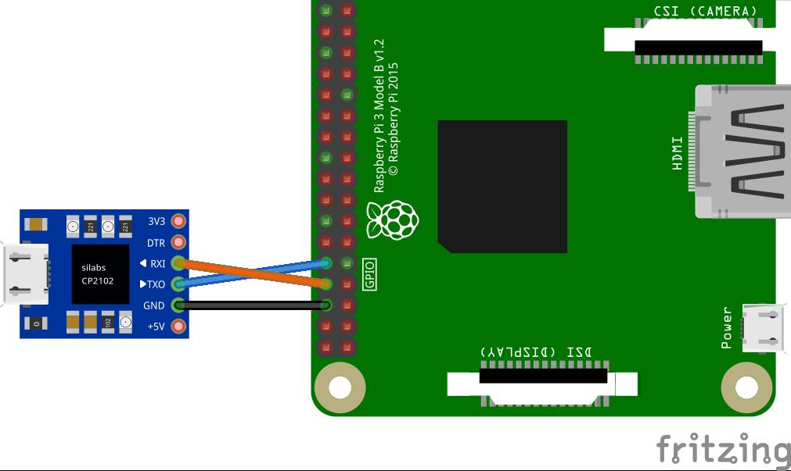
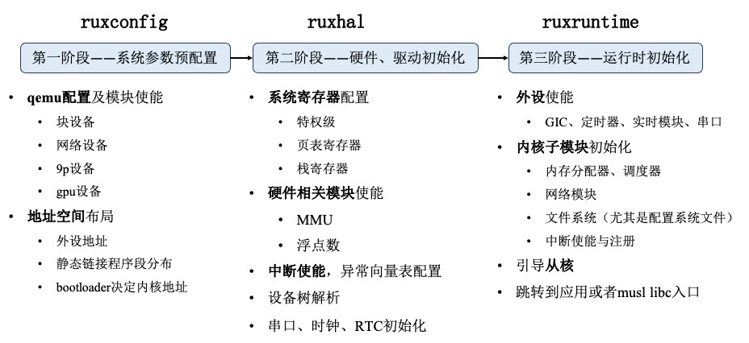

欢迎使用 RuxOS！
该项目为 RuxOS 手册，面向应用开发者和内核开发者，包含以下内容：
-
RuxOS 概述
-
使用 RuxOS 运行应用
-
RuxOS 整体设计
RuxOS 手册仍在完善中。
RuxOS 是什么？
RuxOS（如意一体操作系统）是一个兼容 Linux 应用的轻量化库操作系统，主要遵循 unikernel 设计思想，由矽望社区维护。
考虑到边缘泛在计算场景下，应用通常数目有限且相对固定，因此将操作系统简化设计为只支持单应用，将内核功能封装为库，以系统调用的形式提供给应用，应用直接运行在内核态。
这种库形态的操作系统应用性能会有极大提升，安全问题(security)主要交给底层的 Type 1 hypervisor(hvisor) 解决。库形态的操作系统需要良好的工具支持，以方便用户根据单一应用生成构造可运行的二进制镜像，如 unikraft。
如意 RuxOS 是一体内核操作系统，部分基础构件来自 ArceOS，RuxOS 完善了内核构件框架并补充添加各种模块，用以适配不同的应用场景，特别是对 Linux 应用的支持。RuxOS 使用 Rust 语言进行开发，充分利用 Rust 语言自身的安全特性，方便的构建工具以及快速发展的扩展库。为便于应用部署，RuxOS 提供了一个方便易用的应用镜像构建工具 RuxGo。
RuxOS 仍然处于开发阶段，目前已完成了对诸多主流应用和编程语言的支持。
RuxOS 手册结构
第一部分 对 RuxOS 目前支持的 Feature，以及应用和编程语言支持情况进行简要介绍。
第二部分 对如何使用 RuxOS 运行现有示例进行了详细介绍。
第三部分 对 RuxOS 的内核模块、用户库实现中的关键技术进行了详细介绍。
第四部分 包含了 RuxOS 的所有开发贡献者。
RuxOS 概述
RuxOS，中文称：如意一体操作系统，是矽望社区研发并长期维护的一款 Unikernel 操作系统。
特性（基于 v0.0.1）
多架构支持
RuxOS 目前完成了在 X86_64、AArch64、Risc-V64 三种架构的 QEMU 环境中启动和运行应用，其中对 AArch64、X86_64 两种架构做了大量工作。
同时对树莓派4B裸机环境也进行了适配，能够在树莓派4B中运行 RuxOS，适配了SD卡驱动，能够进行数据持久化。
多核多线程支持
RuxOS 支持多核环境运行，支持多线程应用。RuxOS 采用先初始化主核，再由主核启动从核的策略，支持多核环境运行。同时，借助较为成熟的调度器，完成了多线程的支持，和多核调度的支持。
多种调度策略
RuxOS 支持三种调度策略：
-
先入先出调度（First In First Out），任务依次执行，直到运行结束或主动让出。
-
时间片轮转调度（Round Robin），任务基于分配的时间片运行，基于时钟中断进行切换。
-
完全公平调度（Complete Fair Schedueling），基于CFS算法，尽可能保证任务获取相等的CPU时间。
VirtIO 驱动
RuxOS 支持多类 VirtIO 设备，实现了对应的前端接口。包括网络设备（virtio-net）、块设备（virtio-blk）、gpu设备（virtio-gpu）、9p设备（virtio-9p）。
基于 smoltcp 的网络协议栈
RuxOS 基于 Rust 第三方库 smoltcp 实现了 TCP/UDP 网络协议栈，适配 Ipv4 地址。
多类文件系统
RuxOS 适配了多类文件系统：
-
fatfs。基于 Rust 第三方库 rust-fatfs 进行了封装，支持文件系统相关接口，并借助 VirtIO 块设备完成数据的持久化。
-
ramfs。内存文件系统，数据保留在内存中，借助 ramfs 生成了匹配 Linux 的 procfs、etcfs 等。
-
9pfs。基于 VirtIO-9p 支持了 9pfs，使得 RuxOS 在 QEMU 环境中能够与 host 共享目录。
-
devfs。初步实现了部分设备文件（random、null、zero）。
动态加载应用程序
RuxOS 支持动态加载应用的 ELF 文件，以及相关的动态链接库。
应用及编程语言支持
RuxOS 目前对如下应用完成了适配和验证：
-
Redis。在 RuxOS 上运行 Redis Server，并通过标准 redis-cli 和 redis-benchmark 进行测试和验证。
-
Nginx。在 RuxOS 上运行 Nginx 作为网络服务器，运行指定网页。
-
Wamr。在 RuxOS 上运行 wasm 字节码解释器 WAMR，并借助 wasi-nn 神经网络后端运行简单的 tensorflow 测试。
-
Iperf。在 RuxOS 上运行标准 Iperf 测试。
-
Sqlite。在 RuxOS 上运行数据库应用 Sqlite。
-
C/C++。基于 musl libc 完成对 C/C++ 程序的适配。
工具
为了方便应用部署，矽望社区团队开发了 RuxGo 工具，用于简化应用运行的配置、命令参数等。
运行现有应用及编程语言基准测试
RuxOS 目前已完成了多种类应用和编程语言的适配。本章节让用户从零开始体验 RuxOS 丰富的应用生态，将会介绍：
-
RuxOS 的环境配置。
-
RuxOS 的编译参数说明及常用的运行命令。
-
如何使用 RuxOS 运行现有的应用及编程语言基准测试。
-
如何使用 RuxOS 动态加载应用 ELF 文件。
环境配置说明
除了基础的 Linux 环境及相关工具链（包括GCC）外，还需要用户进行下面的环境配置。
Rust 基础环境
在使用 RuxOS 前，需要用户自行配置 Rust 相关编程环境以及工具链。参考这里安装好 Rust 环境与 cargo 工具。
通过以下两条命令判断是否安装好 Rust 环境与 cargo 工具：
rustc --version
cargo --version
RuxOS 需要在 nightly 版本的 Rust 环境中运行和开发，完成如上工作后，在 RuxOS 源码中会自动切换和拉取指定版本的 Nightly Rust。
Rust 相关二进制工具链
参考下面的教程，在 Ubuntu 上安装工具链。
为了使用rust-objcopy和rust-objdump，需要安装cargo-binutils：
cargo install cargo-binutils
部分 Rust 库使用到了 clang ，需要安装相关依赖：
sudo apt install libclang-dev
musl 工具链
RuxOS 通过 musl gcc 来完成相关应用的编译，通过 musl libc 来支持相关应用和编程语言。
下载并安装 musl 交叉编译工具链:
# 在合适的目录下载
wget https://musl.cc/aarch64-linux-musl-cross.tgz
wget https://musl.cc/riscv64-linux-musl-cross.tgz
wget https://musl.cc/x86_64-linux-musl-cross.tgz
# 安装
tar zxf aarch64-linux-musl-cross.tgz
tar zxf riscv64-linux-musl-cross.tgz
tar zxf x86_64-linux-musl-cross.tgz
# 添加临时环境变量或写入 ~/.bashrc 文件。将其中`pwd`换成合适路径。
export PATH=`pwd`/x86_64-linux-musl-cross/bin:`pwd`/aarch64-linux-musl-cross/bin:`pwd`/riscv64-linux-musl-cross/bin:$PATH
编译参数及常用命令说明
RuxOS 提供了灵活、明确的诸多编译参数，来针对多种类型的应用进行构建和运行，同时进行应用裁剪和 QEMU 配置。同时为开发、调试、运行提供了较多命令。下面对这些参数和常用命令进行介绍，对常用且往往需要用户指定的参数进行了加粗显示。
通用参数
| General Options | |
|---|---|
| ARCH | 目标架构： x86_64, riscv64, aarch64. 默认架构为 x86_64。 |
| PLATFORM | 在 platforms 目录下定义的目标平台。该参数可以由用户定义，也可以根据 ARCH 参数进行生成。里面包含了平台相关的参数定义。 |
| SMP | CPU 核数。如果该参数大于1，就会启用多核的特性。默认值为1。 |
| MODE | 与 cargo build 相关的模式，默认为 release。 |
| LOG | 日志等级: warn, error, info, debug, trace。默认是 warn。 |
| V | Verbose 等级: (empty), 1, 2 |
| ARGS | 命令行参数，使用逗号分隔，不允许空格，可以为空。用来给应用程序传递具体的参数，即 argc，argv。 |
| ENVS | 环境变量参数，使用逗号分隔，不允许空格，可以为空。 |
应用参数
| App Options | |
|---|---|
| A/APP | 应用程序目录的路径。支持相对路径和绝对路径。默认指向 apps/c/helloworld.。 |
| FEATURES | RuxOS 模块的 feature。该参数用于在命令行开启用户想要的额外 feature，而不需要出现在具体应用的 features.txt文件中。 |
| APP_FEATURES | rust 应用的额外 feature。 |
Qemu 参数
| Qemu Options | |
|---|---|
| BLK | 使能 qemu virtio-blk 后端。如果应用需要对数据进行持久化，或者通过文件系统传递配置文件，则需要设置该参数。 |
| NET | 使能 qemu 的 virtio-net 后端。如果应用需要使用网络，则应该设置该参数。 |
| GRAPHIC | 使能 qemu 的 virtio-gpu 后端，用于图形界面输出。 |
| BUS | 选择设备总线类型：mmio, pci。 |
| DISK_IMG | 文件系统磁盘镜像的路径。默认值是根目录的 disk.img。 |
| ACCEL | 使能 x86 的 KVM 硬件加速。 |
| QEMU_LOG | 使能 qemu 的日志，默认输出到 qemu.log 文件中，里面包含运行的汇编代码。 |
| NET_DUMP | 网络包抓取，输出到根目录的 netdump.pcap 文件中。 |
| NET_DEV | qemu 网络设备类型：user, tap。 |
| START_PORT | qemu 开放的端口的起始端口号（默认是5555号端口）。 |
| PORTS_NUM | qemu 开放的端口的数量（默认是5个）。 |
9P 参数
| 9P Options | |
|---|---|
| V9P_PATH | host 上用于共享的文件目录。默认值是根目录。 |
| NET_9P_ADDR | 9p netdev 的地址和端口。默认值是 127.0.0.1:564。 |
| ANAME_9P | 9pfs 的路径。 |
| PROTOCOL_9P | 9p 协议类型。 |
网络参数（默认端口号 5555）
| Network Options | |
|---|---|
| IP | Ruxos IPv4 地址（qemu user netdev，默认是 10.0.2.15）。 |
| GW | 网关 IPv4 地址（qemu user netdev，默认是 10.0.2.2）。 |
Libc 参数
| Libc Options | |
|---|---|
| MUSL | 使用 musl libc 来进行编译、链接。默认情况下 RuxOS 用的是 ruxlibc 。用户可以通过设置 MUSL=y 来使能 musl libc。 |
运行命令
RuxOS 提供了多种运行命令，以满足不同的需求，包含编译、运行、调试等。这些命令需要在 RuxOS 根目录下运行。
make build
编译指定的应用，默认为 helloworld 应用，生成可供 qemu 直接运行的二进制内核文件。
make run
运行指定的应用，包含了 make build 的过程，将生成的二进制内核文件传给 qemu，qemu 的参数根据用户声明的编译参数进行生成。
make disasm
将运行的二进制指令反汇编，生成文件包含了运行过程中的所有汇编指令。
make debug
启动 GDB 进行调试。
make disk_img
借助 dd，mkfs 命令生成一个 fat32 镜像文件，传给 qemu 作为磁盘文件。
当涉及到需要使用文件系统、块设备存储的程序时，需要提供给 qemu 一个块设备。
make clean_c
清除 ruxlibc 的 libc.a 以及 C 应用程序声明的 app-objs，如果对应的应用程序的 axbuild.mk 也写了 clean_c
也会相应的运行。
make clean_musl
清除 musl libc 生成的 install 目录和 build 目录，该命令之后，运行 musl libc 相关的应用时会重新编译 musl libc。
make clean
该命令包含 make clean_c，make clean_musl，同时会清除应用程序的 elf 文件和 bin 文件，并执行 cargo clean。
make clippy
借助 clippy 做代码规范检查。
make fmt
借助 cargo fmt 对调整 Rust 代码格式。
make fmt_c
对 C 代码格式进行规范。
make test
对 apps/ 目录下的应用进行测试，并通过比对输出结果与相应的 .out 文件来判断是否正确。
现有应用及编程语言支持
借助 RuxOS 提供的 ruxlibc 或 ruxmusl 支持的标准 musl libc， RuxOS 完成了许多应用和编程语言的集成。
应用的适配思路为：
-
静态链接。借助 ruxlibc 或者 musl libc 对应用源码进行静态编译，再链接内核的相关静态库，并放到 QEMU 中运行。
-
动态链接。借助 RuxOS 提供的动态链接器动态链接应用的 ELF 文件，其中要求该 ELF 基于 musl gcc 进行编译生成。
编程语言适配思路：
-
支持相关解释器。以 Python 为例，通过支持 cpython 解释器来运行 Python 终端和相关的 Python 文件。
-
支持相关标准库。以 Rust 为例，通过标准 musl libc 支持 Rust std，进而支持 Rust 应用。
本小节包括：
Hello World!
RuxOS 借助 make 工具，为用户提供了完善而便捷的方式来运行应用。
例如一个最简单的 hello world 应用，源码如下：
#include <stdio.h>
int main()
{
printf("Hello, %c app!\n", 'C');
return 0;
}
运行方式为：
make A=apps/c/helloworld run
参数解释：
A: 该参数指向运行的应用程序的目录
通过运行上述命令，一个简单的 C 应用就成功启动了，一个可能的运行示例结果显示如下：
8888888b. .d88888b. .d8888b.
888 Y88b d88P" "Y88b d88P Y88b
888 888 888 888 Y88b.
888 d88P 888 888 888 888 888 888 "Y888b.
8888888P" 888 888 `Y8bd8P' 888 888 "Y88b.
888 T88b 888 888 X88K 888 888 "888
888 T88b Y88b 888 .d8""8b. Y88b. .d88P Y88b d88P
888 T88b "Y88888 888 888 "Y88888P" "Y8888P"
arch = x86_64
platform = x86_64-qemu-q35
target = x86_64-unknown-none
smp = 1
build_mode = release
log_level = error
Hello, C app!
Iperf3
Iperf3 是一个用来测试网络实时带宽性能的工具。
拉取 Iperf 目录
执行：
git clone https://github.com/syswonder/rux-iperf ./apps/c/iperf/
该命令将拉取 iperf patch 等文件放到 apps/c/iperf 目录下。
构建、运行
通过下面的命令，在 RuxOS 上启动 iperf3 服务器：
# in ruxos root directory
make A=apps/c/iperf BLK=y NET=y ARCH=<arch> run
基准测试
打开另一个终端，运行 iperf3 的客户端：
-
RuxOS-iperf3 作为接收端:
# TCP iperf3 -c 127.0.0.1 -p 5555 # UDP iperf3 -uc 127.0.0.1 -p 5555 -b <sender_bitrate> -l <buffer_len>用户需要设置
<sender_bitrate>参数来避免在使用 UDP 的时候，从客户端发送的包过快。 -
RuxOS-iperf3 作为发送端:
# TCP iperf3 -c 127.0.0.1 -p 5555 -R # UDP iperf3 -uc 127.0.0.1 -p 5555 -b 0 -l <buffer_len> -R
默认情况下，<buffer_len> 针对 TCP 是 128KB，针对 UDP 是 8KB。扩大缓冲的长度也许可以提高性能。用户可以通过设置 -l 后的参数来改变这一长度。
注意，在使用 UDP 的时候，如果 <buffer_len> 大于了 1472 （总的数据包长度超过了网卡的最大发送单元长度 MTU），数据包需要被切割，需要使能 smoltcp 的 fragmentation feature：
# in ruxos/modules/axnet/Cargo.toml
[dependencies.smoltcp]
git = "https://github.com/rcore-os/smoltcp.git"
rev = "2ade274"
default-features = false
features = [
"alloc", "log", # no std
"medium-ethernet",
"proto-ipv4",
"socket-raw", "socket-icmp", "socket-udp", "socket-tcp", "socket-dns",
# "fragmentation-buffer-size-65536", "proto-ipv4-fragmentation",
# "reassembly-buffer-size-65536", "reassembly-buffer-count-32",
# "assembler-max-segment-count-32",
]
SQLite
SQLite 是使用 C 语言实现的一款轻量 SQL 数据库引擎。RuxOS 支持了 SQLite，并针对常用 SQL 语句进行了测试，除了 SQL 语句的正确性测试以外，还能借助块设备进行数据持久化。
运行命令
通过在 RuxOS 根目录执行下面命令，可以基于 ruxlibc 运行起来 SQLite。
make A=apps/c/sqlite3/ LOG=error BLK=y run
参数解释：
-
A：SQLite 的测试程序 main 函数所在目录路径。 -
LOG：运行的日志等级，不同的日志等级能够打印出不同的调试信息。 -
BLK：使用块设备进行数据持久化。
运行结果
一个可能的运行结果如下所示：
SeaBIOS (version rel-1.16.3-0-ga6ed6b701f0a-prebuilt.qemu.org)
iPXE (http://ipxe.org) 00:02.0 CA00 PCI2.10 PnP PMM+7EFD0AA0+7EF30AA0 CA00
Booting from ROM..
Initialize IDT & GDT...
8888888b. .d88888b. .d8888b.
888 Y88b d88P" "Y88b d88P Y88b
888 888 888 888 Y88b.
888 d88P 888 888 888 888 888 888 "Y888b.
8888888P" 888 888 `Y8bd8P' 888 888 "Y88b.
888 T88b 888 888 X88K 888 888 "888
888 T88b Y88b 888 .d8""8b. Y88b. .d88P Y88b d88P
888 T88b "Y88888 888 888 "Y88888P" "Y8888P"
arch = x86_64
platform = x86_64-qemu-q35
target = x86_64-unknown-none
smp = 1
build_mode = release
log_level = error
[ 0.131281 0 axfs_ramfs::dir:55] AlreadyExists sys
sqlite version: 3.41.1
sqlite open memory status 0
======== init user table ========
sqlite exec:
create table user(id INTEGER PRIMARY KEY AUTOINCREMENT,username TEXT,password TEXT)
======== insert user 1, 2, 3 into user table ========
sqlite exec:
insert into user (username, password) VALUES ('memory_1', 'password1'), ('memory_2', 'password2'), ('memory_3', 'password3')
======== select all ========
sqlite query:
select * from user
id = 1
username = memory_1
password = password1
id = 2
username = memory_2
password = password2
id = 3
username = memory_3
password = password3
======== select id = 2 ========
sqlite query:
select * from user where id = 2
id = 2
username = memory_2
password = password2
sqlite open /file.sqlite status 0
======== init user table ========
sqlite exec:
create table user(id INTEGER PRIMARY KEY AUTOINCREMENT,username TEXT,password TEXT)
======== insert user 1, 2, 3 into user table ========
sqlite exec:
insert into user (username, password) VALUES ('file_1', 'password1'), ('file_2', 'password2'), ('file_3', 'password3')
======== select all ========
sqlite query:
select * from user
id = 1
username = file_1
password = password1
id = 2
username = file_2
password = password2
id = 3
username = file_3
password = password3
======== select id = 2 ========
sqlite query:
select * from user where id = 2
id = 2
username = file_2
password = password2
再次运行上述命令，可得到如下运行结果：
SeaBIOS (version rel-1.16.3-0-ga6ed6b701f0a-prebuilt.qemu.org)
iPXE (http://ipxe.org) 00:02.0 CA00 PCI2.10 PnP PMM+7EFD0AA0+7EF30AA0 CA00
Booting from ROM..
Initialize IDT & GDT...
8888888b. .d88888b. .d8888b.
888 Y88b d88P" "Y88b d88P Y88b
888 888 888 888 Y88b.
888 d88P 888 888 888 888 888 888 "Y888b.
8888888P" 888 888 `Y8bd8P' 888 888 "Y88b.
888 T88b 888 888 X88K 888 888 "888
888 T88b Y88b 888 .d8""8b. Y88b. .d88P Y88b d88P
888 T88b "Y88888 888 888 "Y88888P" "Y8888P"
arch = x86_64
platform = x86_64-qemu-q35
target = x86_64-unknown-none
smp = 1
build_mode = release
log_level = error
[ 0.130932 0 axfs_ramfs::dir:55] AlreadyExists sys
sqlite version: 3.41.1
sqlite open memory status 0
======== init user table ========
sqlite exec:
create table user(id INTEGER PRIMARY KEY AUTOINCREMENT,username TEXT,password TEXT)
======== insert user 1, 2, 3 into user table ========
sqlite exec:
insert into user (username, password) VALUES ('memory_1', 'password1'), ('memory_2', 'password2'), ('memory_3', 'password3')
======== select all ========
sqlite query:
select * from user
id = 1
username = memory_1
password = password1
id = 2
username = memory_2
password = password2
id = 3
username = memory_3
password = password3
======== select id = 2 ========
sqlite query:
select * from user where id = 2
id = 2
username = memory_2
password = password2
sqlite open /file.sqlite status 0
======== init user table ========
sqlite exec:
create table user(id INTEGER PRIMARY KEY AUTOINCREMENT,username TEXT,password TEXT)
sqlite exec error: table user already exists
======== insert user 1, 2, 3 into user table ========
sqlite exec:
insert into user (username, password) VALUES ('file_1', 'password1'), ('file_2', 'password2'), ('file_3', 'password3')
======== select all ========
sqlite query:
select * from user
id = 1
username = file_1
password = password1
id = 2
username = file_2
password = password2
id = 3
username = file_3
password = password3
id = 4
username = file_1
password = password1
id = 5
username = file_2
password = password2
id = 6
username = file_3
password = password3
======== select id = 2 ========
sqlite query:
select * from user where id = 2
id = 2
username = file_2
password = password2
出现差异的原因是第一次运行之后进行了数据持久化，再次运行时，上次存储的键值对仍然在块设备上。
如果运行下列命令，则数据不会进行持久化：
make A=apps/c/sqlite3/ LOG=error BLK=y run FEATURES=driver-ramdisk
Redis
RuxOS 支持在 Qemu 上运行 Redis 服务器端。
拉取 Redis 目录
运行：
git clone https://github.com/syswonder/rux-redis ./apps/c/redis/
该命令将拉取 Redis 相关的 makefile 以及 patch 文件到 apps/c/redis 目录下。
创建文件系统镜像
在 RuxOS 根目录运行：
make disk_img
该命令会在根目录生成一个文件系统(fatfs)镜像 disk.img，传给 qemu 使用。
启动 Redis-Server
运行下面的命令，会在 5555 端口上启动 Redis 服务器端。
make A=apps/c/redis/ LOG=error NET=y BLK=y ARCH=aarch64 SMP=4 ARGS="./redis-server,--bind,0.0.0.0,--port,5555,--save,\"\",--appendonly,no,--protected-mode,no,--ignore-warnings,ARM64-COW-BUG" run
参数解释：
-
A: 该参数指向 Redis 应用所在的目录。 -
LOG:LOG表示输出的日志等级，更低的日志等级意味着更详细的输出。可选包含：error,warn,info,debug,trace。 -
NET: 该参数用于使能 qemu 的 virtio-net。 -
BLK: 该参数用于使能 qemu 的 virtio-blk。 -
ARCH:ARCH表示将 RuxOS 运行在何种架构上，可选架构参数包括:x86_64,aarch64,riscv64. -
SMP:SMP用于使能 RuxOS 的多核 feature，紧跟着的数字表示启动的核数。 -
ARGS:ARGS提供 redis-server 运行所需要的参数。这里表示将 redis-server 运行在 qemu 的 0.0.0.0:5555，且不对数据做周期性的持久化。
通过运行上述命令，Redis 的服务器端在端口 5555 上启动，启动示例如下：
8888888b. .d88888b. .d8888b.
888 Y88b d88P" "Y88b d88P Y88b
888 888 888 888 Y88b.
888 d88P 888 888 888 888 888 888 "Y888b.
8888888P" 888 888 `Y8bd8P' 888 888 "Y88b.
888 T88b 888 888 X88K 888 888 "888
888 T88b Y88b 888 .d8""8b. Y88b. .d88P Y88b d88P
888 T88b "Y88888 888 888 "Y88888P" "Y8888P"
arch = aarch64
platform = aarch64-qemu-virt
target = aarch64-unknown-none-softfloat
smp = 4
build_mode = release
log_level = error
[1717404360.021450 axfs_ramfs::dir:55] AlreadyExists sys
2:C 03 Jun 2024 08:46:00.077 # oO0OoO0OoO0Oo Redis is starting oO0OoO0OoO0Oo
2:C 03 Jun 2024 08:46:00.078 # Redis version=7.0.12, bits=64, commit=00000000, modified=1, pid=2, just started
2:C 03 Jun 2024 08:46:00.079 # Configuration loaded
2:M 03 Jun 2024 08:46:00.085 * Increased maximum number of open files to 10032 (it was originally set to 1024).
2:M 03 Jun 2024 08:46:00.085 * monotonic clock: POSIX clock_gettime
2:M 03 Jun 2024 08:46:00.104 * Running mode=standalone, port=5555.
2:M 03 Jun 2024 08:46:00.104 # Server initialized
2:M 03 Jun 2024 08:46:00.104 # WARNING Memory overcommit must be enabled! Without it, a background save or replication may fail under low memory condit.
2:M 03 Jun 2024 08:46:00.110 # Failed to test the kernel for a bug that could lead to data corruption during background save. Your system could be affe.
2:M 03 Jun 2024 08:46:00.117 * Ready to accept connections
当看到 Ready to accept connections 即可表示 Redis Server 成功启动。
如何连接、测试
推荐使用 redis tools 来连接到 Redis 服务器:
sudo apt install redis-tools
redis-cli
运行：
redis-cli -p 5555
之后就可以执行所有 redis 的客户端命令，与在 linux 等操作系统上运行无异。
redis-benchmark
使用 Redis benchmark 基准测试工具来进行测试:
redis-benchmark -p 5555
更多详细的测试参数可以参考 Redis Benchmark.
使用 Musl libc
默认情况下，RuxOS 的 redis-server 使用自定义的 C 应用程序 ruxlibc。
通过添加 MUSL=y 到运行的命令中，就能借助 RuxOS 集成好的标准 musl libc来编译、链接。
使用 9pfs
默认情况下，RuxOS 通过命令行中的 ARGS 参数来向应用传递参数，这种方法可能会带来不变。现在 RuxOS 已经成功集成了 9pfs，用于 host 和 qemu 进行文件目录的共享，即可以通过应用自己的配置文件来传递参数。
运行下面的命令:
make A=apps/c/redis/ LOG=error NET=y V9P=y BLK=y FEATURES=virtio-9p V9P_PATH=apps/c/redis ARCH=aarch64 SMP=4 ARGS="./redis-server,/v9fs/redis.conf" run
参数解释:
-
V9P: 使用V9P=y来使能 qemu 的 virtio-9p 后端。 -
V9P_PATH:V9P_PATH指向 host 上的用于共享的目录，里面包含了 Redis 的配置文件。
关于切换架构、切换是否使用 musl libc、切换是否使用9pfs，可以参考 Redis ReadMe 给出的相关命令来灵活使用。
Nginx
RuxOS 支持在 Qemu 上运行 Nginx 构建服务器。
拉取 Nginx 目录
执行：
git clone https://github.com/syswonder/rux-nginx.git ./apps/c/nginx
该命令将拉取Nginx的编译配置文件等文件放到 apps/c/nginx 目录下。
运行样例
如果您只是想要测试nginx的可运行性，而不关心nginx本身运行的内容，可以通过下面的命令直接运行样例
bash ./apps/c/nginx/example_run.sh
创建文件系统镜像
运行时，需要保证文件系统中存在以下文件：
/nginx/logs/error.log
/nginx/conf/nginx.conf
/nginx/conf/mime.types
其中，error.log 是日志文件（但是实际上没有用到），nginx.conf 是 Nginx 配置文件，告诉 Nginx 如何运行以及一些运行的参数。mime.type 是类型转化文件，告诉Nginx如何看待不同类型的文件。
如果 RuxOS 根目录下没有 disk.img，在运行时会自动创建一个符合条件的 img。
如果您想要重新生成镜像，可以运行 apps/c/nginx 目录下的 create_nginx_img.sh。
创建网页文件
在默认设置下运行时，apps/c/nginx 目录下需要有一个名为 html 的文件夹，用来装载 Nginx 服务器的网页。
网页文件也可以设置在其他路径上，详见下面关于 nginx.conf 以及 9p 的内容
运行 Nginx
在上面的步骤完成后，在RuxOS的根目录下运行下面的命令，可以在5555端口上启动Nginx服务器。
make A=apps/c/nginx/ LOG=info NET=y BLK=y ARCH=aarch64 SMP=4 run
参数解释：
A: 该参数指向 Nginx 应用所在的目录。LOG:LOG表示输出的日志等级，更低的日志等级意味着更详细的输出。可选包含：error,warn,info,debug,trace。NET: 该参数用于使能 qemu 的 virtio-net。BLK: 该参数用于使能 qemu 的 virtio-blk。ARCH:ARCH表示将 RuxOS 运行在何种架构上，可选架构参数包括:x86_64,aarch64,riscv64.SMP:SMP用于使能 RuxOS 的多核 feature，紧跟着的数字表示启动的核数。
注意，如果在第一次运行之后修改了源码或者运行参数，请运行下面的命令清理应用文件
make clean_c A=apps/c/nginx
如何连接、测试
当访问服务器的5555端口时，便可以访问网页
使用 Musl libc
默认情况下，RuxOS 的Nginx使用自定义的 C 应用程序 ruxlibc。
通过添加 MUSL=y 到运行的命令中，就能借助 RuxOS 集成好的标准 musl libc来编译、链接。
使用 9pfs
默认情况下，RuxOS 通过命令行中的 ARGS 参数来向应用传递参数，这种方法可能会带来不便。现在 RuxOS 已经成功集成了 9pfs，用于 host 和 qemu 进行文件目录的共享，即可以通过应用自己的配置文件来传递参数。
运行下面的命令:
make A=apps/c/nginx/ LOG=info NET=y BLK=y FEATURES=virtio-9p V9P=y V9P_PATH=./apps/c/nginx/html/ ARCH=aarch64 SMP=4 run
参数解释:
V9P: 使用V9P=y来使能 qemu 的 virtio-9p 后端。FEATURES=virtio-9p：告诉 RuxOS 启用 9p 功能V9P_PATH:V9P_PATH指向 host 上的用于共享的目录，默认情况下这是网页文件的位置。
使用HTTPS
默认情况下，nginx用作http网络服务器，如果您想要使用https，请使用rux-nginx的with_ssl分支
rm -rf ./apps/c/nginx
git clone https://github.com/syswonder/rux-nginx.git -b with_ssl ./apps/c/nginx
其他运行步骤不变
nginx.conf
您可以修改apps/c/nginx目录下的 nginx.conf 文件来对 Nginx 的配置进行修改，包括修改 Nginx 服务器功能、修改服务器参数、修改 Nginx 运行选项等。
注意：
-
除 http 服务器之外的功能尚未验证
-
如果修改服务器参数（比如端口），请对 qemu 的相应设置（比如端口映射）做相应更改
-
修改完 nginx.conf 后请将其复制到文件系统镜像中，您可以通过在
apps/c/nginx目录下运行./create_nginx_img.sh来完成 -
使用 9pfs 时的 nginx.conf 会有所不同，其内容在
apps/c/nginx目录下的 nginx_9p.conf 中，可以通过./create_nginx_img.sh 9p的命令来将其复制到文件系统镜像中
WAMR
RuxOS 支持在 Qemu 上通过wasm运行时 WAMR来运行wasm应用。
WAMR简介
WAMR是一个轻量级的wasm运行时，支持在嵌入式设备上运行wasm应用，现在归属于字节码联盟，由社区维护。RuxOS提供了Hello World和2048小游戏的wasm应用作为示例，同时支持WASI-NN，具有运行神经网络模型的能力。
将rux-wamr克隆到RuxOS项目的apps/c目录下，有如下结构：
├── axbuild.mk
├── CMakeLists.txt
├── features.txt
├── README.md
├── rootfs
│ ├── ...
├── wamr.patch
rootfs/目录下的main.wasm和其他wasm文件是通过WASM编译器从.c文件编译而来的。rootfs/是一个最小的RuxOS根文件系统，使用9pfs供 RuxOS 使用。
编译WAMR并运行示例
WAMR的编译依赖于cmake，所以在编译WAMR之前需要安装cmake。
在RuxOS根目录运行下面的命令，会启动hello world的wasm应用。
make A=apps/c/rux-wamr ARCH=aarch64 LOG=info SMP=4 MUSL=y V9P=y V9P_PATH=apps/c/rux-wamr/rootfs ARGS="iwasm,/main.wasm" run
参数解释：
-
A: 该参数指向 WAMR 应用所在的目录。 -
ARCH:ARCH表示将 RuxOS 运行在何种架构上，可选架构参数包括:x86_64,aarch64,riscv64. -
LOG:LOG表示输出的日志等级，更低的日志等级意味着更详细的输出。可选包含：error,warn,info,debug,trace。 -
SMP:SMP用于使能 RuxOS 的多核 feature，紧跟着的数字表示启动的核数。 -
MUSL: 该参数表示使用musl libc作为编译时的c库。 -
V9P: 该参数用于使能 qemu 的 virtio-9p。 -
V9P_PATH:V9P_PATH指向 host 上的用于共享的目录，这里使用rux-wamr的rootfs目录，其中包含了wasm应用的wasm文件。 -
ARGS:ARGS提供wasm应用运行所需要的参数。这里表示用iwasm可执行文件解释执行wasm字节码文件/main.wasm。若要运行2048小游戏，将/main.wasm改为/2048.wasm即可。
输入wasd以控制，运行2048小游戏的界面如下：

若需要将参数传递给wasm应用的main函数，可以在/main.wasm后面添加参数，如iwasm,/main.wasm,--help。
若需要将参数传递给iwasm，如指定给iwasm的环境变量，可将其放在iwasm之后，/main.wasm之前，如iwasm,--env="xxx=yyy",/main.wasm。
运行自己的wasm应用
wasm具有跨平台的特性，所以在RuxOS上可以直接运行在本机上编译好的wasm应用。
想要运行自己的wasm应用，只需要在本地编译好wasm应用，将wasm文件放到rux-wamr的rootfs目录下，然后修改上述命令的ARGS参数即可运行。
这里使用WASI-SDK编译wasm应用。首先下载WASI-SDK并解压到合适的目录，然后运行类似下面的命令编译wasm应用：
$WASI_SDK_DIR/bin/clang -O3 -o main.wasm main.c
编译完成后将main.wasm文件放到rux-wamr的rootfs目录下即可。
WASI-NN
如果需要在WAMR中使用NN（神经网络）支持，需要运行带WASI_NN=1参数的make命令：
make A=apps/c/wamr ARCH=aarch64 LOG=info SMP=4 MUSL=y V9P=y V9P_PATH=apps/c/wamr/rootfs WASI_NN=1 ARGS="iwasm,/main.wasm" run
例如，如果你想自己编译支持神经网络的测试用例，可以在apps/c/wamr/wasm-micro-runtime-{version}/core/iwasm/libraries/wasi-nn/test/目录中使用如下命令：
# 假设你已经将wasi-sdk安装在/opt/wasi-sdk目录下
/opt/wasi-sdk/bin/clang \
-Wl,--allow-undefined \
-Wl,--strip-all,--no-entry \
--sysroot=/opt/wasi-sdk/share/wasi-sysroot \
-I../include -I../src/utils \
-o test_tensorflow.wasm \
test_tensorflow.c utils.c
如果你想将c++文件编译成wasm文件，你需要在上述命令中加上-lc++和-lc++abi参数。
然后复制test_tensorflow.wasm到apps/c/wamr/rootfs目录下即可：
cp test_tensorflow.wasm ../../../../../../rootfs/
运行test_tensorflow_quantized.wasm文件的方法也是一样的。
*.tflite模型文件由rootfs/models/*.py生成，可以在本地使用python生成自定义的*.tflite模型文件。
运行上述make命令体验在RuxOS上运行神经网络模型。
如果你想在Rust中构建支持wasi_nn的wasm，需要在make命令中添加WAMR_BUILD_WASI_EPHEMERAL_NN=1参数。因为Rust中wasi_nn的模块名是wasi_ephemeral_nn，而不是wasi_nn：
make A=apps/c/wamr ARCH=aarch64 LOG=info run MUSL=y V9P=y V9P_PATH=apps/c/wamr/rootfs ARGS="iwasm,--env="TARGET=cpu",--dir=.,/built_from_rust.wasm" WASI_NN=1 WAMR_BUILD_WASI_EPHEMERAL_NN=1
更多
你也可以使用这个应用在ruxos上运行其他wasm文件。只需要编译.wasm文件并将其放入rootfs/目录中。然后使用上面的命令运行它，只需更改ARGS参数，就可以在ruxos中享受wasm应用。
Perl
RuxOS 支持在 Qemu 上运行 perl 程序。
实现方式:
为了在Rux OS操作系统上实现对perl语言的支持，首先利用了RuxOS已经集成的Musl-libc。Musl-libc是一个轻量级的C标准库，它为perl提供了必要的运行时环境。通过使用Musl-GCC编译器对perl的源代码进行编译，使得perl能够在RuxOS上运行。 将编译好的perl二进制文件以及它所需的所有动态库一起放入系统的root文件系统（rootfs）中。通过这种方式，perl可以在RuxOS上通过动态链接的方式运行。
简单测试程序:
第一步:
首先搭建好 RuxOS 的环境。
第二步:
进入RuxOS的根目录，输入以下命令，该命令将拉取 perl 相关的文件到 apps/c/rux-perl 目录下。并运行helloworld程序。
git clone https://github.com/syswonder/rux-perl.git ./apps/c/rux-perl
make A=apps/c/rux-perl ARCH=aarch64 V9P=y NET=y MUSL=y SMP=1 run
结果如下，会输出一行hello,perl!
8888888b. .d88888b. .d8888b.
888 Y88b d88P" "Y88b d88P Y88b
888 888 888 888 Y88b.
888 d88P 888 888 888 888 888 888 "Y888b.
8888888P" 888 888 `Y8bd8P' 888 888 "Y88b.
888 T88b 888 888 X88K 888 888 "888
888 T88b Y88b 888 .d8""8b. Y88b. .d88P Y88b d88P
888 T88b "Y88888 888 888 "Y88888P" "Y8888P"
arch = aarch64
platform = aarch64-qemu-virt
target = aarch64-unknown-none-softfloat
smp = 1
build_mode = release
log_level = warn
[1716796042.017428 0 axfs_ramfs::dir:55] AlreadyExists sys
[1716796042.199408 0:2 ruxos_posix_api::imp::fd_ops:182] unsupported fcntl parameters: cmd 1
[1716796042.215760 0:2 ruxos_posix_api::imp::fd_ops:182] unsupported fcntl parameters: cmd 1
Hello, perl!
运行用户程序:
rux-perl的结构如下
rux-perl
├── axbuild.mk
├── config_linux.toml
├── features.txt
├── main.c
├── README.md
├── rootfs
│ ├── dev
│ ├── etc
│ ├── lib //perl所需的动态库
│ │ ├── ld-linux-armhf.so.3
│ │ └── ld-musl-aarch64.so.1
│ ├── perl //perl可执行文件
│ ├── proc
│ ├── sys
│ ├── tmp
│ ├── usr //perl所需的环境变量
│ │ └── local
│ │ └── lib
│ │ └── perl5
│ └── your_perl.t //默认运行的hello,perl程序
├── test_perl.sh
└── test.py
在 axbuild.mk中有一行：
ARGS = perl,your_perl.t
可以将 your_perl.t 换成想运行的xxx.t程序
perl的测试相关
因为RuxOS 目前并不支持fork() ，所以我用了一些方法来运行官方测试程序
如果你想运行perl的测试程序，首先将 main.c 中的一些注释给取消，这些是用于io重定向的 :
// The following section of code is used only during Perl testing:
// int fd = open("test_result.txt", O_WRONLY | O_CREAT | O_APPEND, 0644);
// char *data = argv[1];
// // wirte test filename
// write(fd, "\n", 1);
// write(fd, data, strlen(data));
// write(fd, "\n", 1);
// if (fd == -1) {
// perror("open failed");
// return 1;
// }
// // io redirect
// if (dup2(fd, STDOUT_FILENO) == -1) {
// perror("dup2 failed");
// return 1;
// }
// chdir("/perl-5.38.2");
然后在RuxOS的根目录下运行:
sh apps/c/rux-perl/test_perl.sh
最后测试结构会保存在 /rux-perl/test_result.txt中
测试脚本解释
test_perl.sh中首先会去下载 perl 的源码，这其中就包括了我们要运行的测试程序
然后调用test.py来进行测试
test.py中首先定义了要测试的文件夹，然后遍历文件夹，找到其中以 .t 为结尾的文件
folders = ["./apps/c/rux-perl/rootfs/perl-5.38.2/t/base"
,"./apps/c/rux-perl/rootfs/perl-5.38.2/t/class"
,"./apps/c/rux-perl/rootfs/perl-5.38.2/t/cmd"
,"./apps/c/rux-perl/rootfs/perl-5.38.2/t/io"
,"./apps/c/rux-perl/rootfs/perl-5.38.2/t/japh"
,"./apps/c/rux-perl/rootfs/perl-5.38.2/t/mro"
,"./apps/c/rux-perl/rootfs/perl-5.38.2/t/opbasic"
,"./apps/c/rux-perl/rootfs/perl-5.38.2/t/re"
,"./apps/c/rux-perl/rootfs/perl-5.38.2/t/comp"]
然后对每个单独的 .t 文件都启动一个 RuxOS 来运行。
os.system(f"make A=apps/c/rux-perl ARCH=aarch64 V9P=y NET=y MUSL=y SMP=1 ARGS=perl,{file} run")
部分结果如下,会输出测试的脚本名称，以及测试的结果。
test result:
/perl-5.38.2/t/base/if.t
1..2
ok 1 - if eq
ok 2 - if ne
/perl-5.38.2/t/base/pat.t
1..2
ok 1 - match regex
ok 2 - match regex
/perl-5.38.2/t/base/while.t
1..4
ok 1
ok 2
ok 3
ok 4
...
动态加载应用ELF文件
ELF Loader: 使 RuxOS 能够运行未经修改的 Linux ELF 应用。
-
ELF 必须是 PIE。
-
支持静态和动态 PIE ELF, 前者使用
-static-pie编译。
目前支持运行 Musl 编译的 x86_64 和 aarch64 Linux 的静态和动态 PIE 应用。
接下来以 AArch64 架构为例, 说明如何使用。
快速开始
提供了两种构建方式。
使用 RuxGo 构建
RuxGo 是 RuxOS 的配套工具。
# 安装 RuxGo
cargo install --git https://github.com/syswonder/ruxgo.git ruxgo
# 克隆 RuxOS 的仓库
git clone https://github.com/syswonder/ruxos
cd ruxos
# 进入示例程序目录
cd apps/c/dl
# 编译依赖库和应用
musl-gcc rootfs/libadd.c -shared -o rootfs/lib/libadd.so
musl-gcc rootfs/hello.c -o rootfs/bin/hello -Lrootfs/lib -ladd
# 复制 musl 动态链接器
cp /path/to/ld-musl-aarch64.so.1 rootfs/lib/
# 编译并运行
ruxgo -b && ruxgo -r
使用 make 构建
# 克隆 RuxOS 的仓库
git clone https://github.com/syswonder/ruxos
cd ruxos
# 进入示例程序目录
cd apps/c/dl
# 编译依赖库和应用
musl-gcc rootfs/libadd.c -shared -o rootfs/lib/libadd.so
musl-gcc rootfs/hello.c -o rootfs/bin/hello -Lrootfs/lib -ladd
# 回到 RuxOS 主目录
cd -
# 复制 musl 动态链接器
cp /path/to/ld-musl-aarch64.so.1 apps/c/dl/rootfs/lib/
# 编译并运行
make run ARCH=aarch64 A=apps/c/dl/ V9P=y MUSL=y
如何生成 musl 动态链接器
一般来说, 可以从很多地方(如musl.cc)里获取预编译的二进制文件, 但也可以从源码自行编译, 如:
# 下载源码
mkdir musl_src
cd musl_src
wget https://musl.libc.org/releases/musl-1.2.3.tar.gz
tar -zxvf musl-1.2.3.tar.gz && rm -f musl-1.2.3.tar.gz
# 编译
mkdir bld
cd bld
../musl-1.2.3/configure --prefix=../install --exec-prefix=../ --syslibdir=../install/lib ARCH=aarch64
make -j && make install
# 编译完成
cd ../install
ls ./lib/
此时应该能得到名为 libc.so 的动态链接器, 改为所需名字即可(如ld-musl-aarch64.so.1).
目录结构
在 RuxOS 的 apps/c/dl 下的文件如下所示:
rootfs/: 用作 9pfs 根文件系统.features.txt,axbuid.mk: make 构建的配置文件.main.c: make 构建的运行入口.config_linux.toml: RuxGo 配置文件.
config_linux.toml 内容如下, 其中相关的参数已给出注释, 其他参数请参考 RuxGo 文档.
[build]
compiler = "gcc"
loader_app = [
"y",
"/bin/hello" # app 在根文件系统中的路径
]
[os]
name = "ruxos"
services = [ # RuxOS features
"alloc",
"paging",
"musl",
"multitask",
"fs",
"virtio-9p",
]
ulib = "ruxmusl"
[os.platform]
name = "aarch64-qemu-virt"
mode = "release"
log = "warn"
[os.platform.qemu]
v9p = "y" # 使用 9pfs
v9p_path = "./rootfs" # 9pfs 根文件系统路径
args = "/bin/hello" # 参数, 一般第一个是程序名
envs = "" # 环境变量
axbuild.mk 的内容如下
app-objs=main.o
# 参数
ARGS = /bin/hello
# 环境变量
ENVS =
# 9pfs 根文件系统路径
V9P_PATH=${APP}/rootfs
RuxOS features 放在 features.txt 里, 内容如下:
paging
alloc
musl
multitask
fs
virtio-9p
rootfs/ 存储了一个文件系统, 通过 9pfs 使用,.
- 使用 ldd 列出依赖的共享库.
- 将 ELF 和必需的配置文件和库依赖复制到相同子目录中.
以 rootfs/bin/hello 为例(源码为 rootfs/hello.c)
/$ ldd rootfs/bin/hello
/lib/ld-musl-aarch64.so.1 (0x5500000000)
libc.musl-aarch64.so.1 => /lib/ld-musl-aarch64.so.1 (0x5500000000)
因此, 应该将 ld-musl-aarch64.so.1 放到 rootfs/lib/ 下.
之后便可以编译并运行.
对于动态 ELF, ELF loader 会加载 app 和动态链接器 (
ld-musl-aarch64.so.1), 由它为 app 加载动态库.
调试
GDB
为了让 gdb 加载符号, 必须让它知道应用的内存布局, 即应用被加载到的地址.
修改 log 等级为 debug, 先运行一次, 可以得到 ELF 代码段被加载到的基地址, 例如:
[1712997884.096284 0:2 ruxos_posix_api::imp::execve::load_elf:91] sys_execve: loaded ELF in 0xffff800000000000, .text is 0xffff800000000440
获取到基地址后, 启动调试会话:
make debug ARCH=aarch64 A=apps/c/dl V9P=y MUSL=y
在 GDB 上加载符号:
(gdb) add-symbol-file -readnow apps/c/dl/rootfs/bin/hello 0xffff800000000440
获取动态库的地址
对于动态链接的 ELF, 还会额外加载依赖的动态库.
对于每个动态库, 动态链接器会:
- 打开文件
- 解析 ELF 头
- 将需要的部分映射到内存
- 关闭文件
其中映射到内存这一步是通过 mmap 来完成的.
假设动态库为 libadd.so, 可以如下操作:
- 设置 log 等级为 debug, 运行应用
- 观察系统调用, 发现对
libadd.so的sys_open - 观察接下来的
sys_mmap: 如果参数prot里带有PROT_EXECUTE, 则为代码段, 其返回值即为基址.
[1713000565.192311 0:2 ruxos_posix_api::imp::fs:208] sys_openat <= -100, Ok("/lib/libadd.so"), 0o2400000 0o0
...
[1713000566.196263 0:2 ruxos_posix_api::imp::fs:209] sys_openat => Ok(3)
...
[1713000566.201834 0:2 ruxos_posix_api::imp::mmap::api:42] sys_mmap <= start: 0x0, len: 0x12000, prot:0x5, flags:0x2, fd: 3
[1713000566.202289 0:2 ruxos_posix_api::imp::mmap::api:46] sys_mmap => Ok(0xffff8000000d7000)
还可以用
directory命令使源码对 gdb 可见.
ELF loader 执行过程
execv
最开始是一个 execv() 调用.
- 这是个标准库函数
- 他会调用
sys_execve()系统调用来完成工作.
sys_execve
系统调用原型:
int execve(const char *pathname, char *const argv[], char *const envp[] );
主要完成以下工作
- 根据
pathname, 加载 ELF 文件, 使用 mmap 将其 LOAD 段的内容映射到内存里. - 解析 ELF 头, 如果有 INTERP 段, 说明是动态链接程序, 则将动态链接器也加载到内存里.
- 申请一个新的栈, 构造辅助向量, 将其和环境变量和参数一起推到新的栈里, 最后推入 argc.
- 修改栈指针寄存器为新栈顶.
- 跳转到程序入口处执行, 如果是动态链接的程序, 则跳转到动态链接器的入口.
此时新栈的内容类似于(详阅这篇文章):
------------------------------------------------------------- 0x7fff6c845000
0x7fff6c844ff8: 0x0000000000000000
_ 4fec: './stackdump\0' <------+
env / 4fe2: 'ENVVAR2=2\0' | <----+
\_ 4fd8: 'ENVVAR1=1\0' | <---+ |
/ 4fd4: 'two\0' | | | <----+
args | 4fd0: 'one\0' | | | <---+ |
\_ 4fcb: 'zero\0' | | | <--+ | |
3020: random gap padded to 16B boundary | | | | | |
- - - - - - - - - - - - - - - - - - - - - - - - - - - - - - -| | | | | |
3019: 'x86_64\0' <-+ | | | | | |
auxv 3009: random data: ed99b6...2adcc7 | <-+ | | | | | |
data 3000: zero padding to align stack | | | | | | | |
. . . . . . . . . . . . . . . . . . . . . . . . . . .|. .|. .| | | | | |
2ff0: AT_NULL(0)=0 | | | | | | | |
2fe0: AT_PLATFORM(15)=0x7fff6c843019 --+ | | | | | | |
2fd0: AT_EXECFN(31)=0x7fff6c844fec ------|---+ | | | | |
2fc0: AT_RANDOM(25)=0x7fff6c843009 ------+ | | | | |
ELF 2fb0: AT_SECURE(23)=0 | | | | |
auxiliary 2fa0: AT_EGID(14)=1000 | | | | |
vector: 2f90: AT_GID(13)=1000 | | | | |
(id,val) 2f80: AT_EUID(12)=1000 | | | | |
pairs 2f70: AT_UID(11)=1000 | | | | |
2f60: AT_ENTRY(9)=0x4010c0 | | | | |
2f50: AT_FLAGS(8)=0 | | | | |
2f40: AT_BASE(7)=0x7ff6c1122000 | | | | |
2f30: AT_PHNUM(5)=9 | | | | |
2f20: AT_PHENT(4)=56 | | | | |
2f10: AT_PHDR(3)=0x400040 | | | | |
2f00: AT_CLKTCK(17)=100 | | | | |
2ef0: AT_PAGESZ(6)=4096 | | | | |
2ee0: AT_HWCAP(16)=0xbfebfbff | | | | |
2ed0: AT_SYSINFO_EHDR(33)=0x7fff6c86b000 | | | | |
. . . . . . . . . . . . . . . . . . . . . . . . . . . . . . . | | | | |
2ec8: environ[2]=(nil) | | | | |
2ec0: environ[1]=0x7fff6c844fe2 ------------------|-+ | | |
2eb8: environ[0]=0x7fff6c844fd8 ------------------+ | | |
2eb0: argv[3]=(nil) | | |
2ea8: argv[2]=0x7fff6c844fd4 ---------------------------|-|-+
2ea0: argv[1]=0x7fff6c844fd0 ---------------------------|-+
2e98: argv[0]=0x7fff6c844fcb ---------------------------+
0x7fff6c842e90: argc=3
自定义应用
本章节将包含如何将您的应用在 RuxOS 上运行起来，下面介绍的均为从源码编译、运行，更便捷的方式是动态加载应用二进制文件。
C 应用
RuxOS 对于 C 应用的支持是比较完善的，根据以下步骤即可完成：
-
将对应的 C 应用源码放到指定的路径，并声明所需要使用的内核 feature。
集成 C 应用的时候，有两个重要的文件：
axbuild.mk与features.txt，前者用于指定需要编译的 C 文件和在编译 C 文件的时候需要提供的编译参数，用于将 C 源文件编译成目标文件后，与内核链接在一起，生成统一的二进制文件。后者用于声明该 C 应用所需要的内核特征，用于对内核进行裁剪。所有的 feature 在 RuxOS 的源码中api/ruxfeat中进行了定义。 -
选取需要使用的 C 标准库，RuxOS 提供了两种 C 标准库，分别是以直接函数调用支持的 ruxlibc 和以系统调用形式支持的标准 musl libc，只需要添加
MUSL=y编译选项即可。 -
参考编译命令：
make run A=<arg1> MUSL=<arg2> ARCH=<arg3> LOG=<arg4> ARGS=<arg5> NET=<arg6> V9P=<arg7> V9P_PATH=<arg8> BLK=<arg9> SMP=<arg10>-
arg1：应用相对于当前终端的路径。
-
arg2：y/n，y 表示使用 musl libc，默认为 n。
-
arg3：目标架构，默认为 x86_64，可选 aarch64/riscv64。
-
arg4：日志等级，可选 error/warn/info/debug/trace，默认为 warn。
-
arg5：应用所需参数，对应 main 函数中的 argv变量，以逗号分隔，不支持空格。
-
arg6：y/n，y 表示使用网络设备，默认为 n。
-
arg7：y/n，y 表示使用 9pfs，默认为 n。
-
arg8：使用 9pfs 时共享目录的路径。在未开启
blkfsfeature 时，该共享目录会挂载到 RuxOS 的根目录上，否则挂载到/9pfs/路径。 -
arg9：y/n，y 表示使用块设备，默认为 n。
-
arg10：核数，大于1会开启
smpfeature，执行多核环境。
-
其他语言应用
解释型语言
解释型语言，以 python 为例，需要支持对应的解释器，然后由解释器去加载、运行源文件。
此时，只需要将解释器源码像上述 C 应用一样进行合理的放置和配置，通过 ARGS 参数来传递相关的应用路径即可，推荐借助 9pfs 共享目录。
带标准库的语言
以 Rust 为例，需要通过 musl libc 支持 Rust std，并将支持的 Rust std 与内核、应用链接到一起即可。
使用ruxgo构建
RuxGo 是由矽望社区开发的，与 RuxOS 紧耦合的工具，通过简洁的命令即可完成应用的编译、运行、清除等功能，方便了应用的快速部署，提高 RuxOS 用户友好度。
本章节内容请参考ruxgo手册。其中包含了如何布置目录结构、如何借助 RuxGo 快速运行现有的 RuxOS 应用。
多平台支持
在前面的章节中，RuxOS 均是运行在 QEMU 环境中，后续矽望社区将结合自研虚拟机监控器 Hvisor，将 RuxOS 运行在 Hvisor 上，借助 Hvisor 适配各类不同的硬件。
但在 RuxOS 的初期探索中，也完成了裸机环境的适配，RuxOS 能够运行在树莓派4B上，支持了相应的 SD 卡驱动，并进行了验证。
Raspi4
移植Ruxos到树莓派上与移植Arceos到树莓派上的流大体上一致，只是有些细节不同。本文还包括了一些可能出现的问题以及解决方案。（可参考文章https://report.syswonder.org/#/2023/20230601_Raspi4-debug-with-jtag）
所需要的硬件：
-
树莓派以及SD卡
-
usb转串口模块
-
JTAG调试器（debug需要用到，只是运行则不需要），调试部分可参考上面提到的文章。
步骤一：烧录好SD卡
给 sd 卡分一个 FAT32 的 boot 区，然后放入启动所需要的文件:
-
下载以下三个文件：
bcm2711-rpi-4-b.dtb，start4.elf，fixup4.dat。下载地址：https://github.com/raspberrypi/firmware/tree/master/boot -
基本启动镜像
kernel8.img。首先clonerust-raspberrypi-OS-tutorials（ https://github.com/rust-embedded/rust-raspberrypi-OS-tutorials）到本地，然后进入06_uart_chainloader文件夹，运行make BSP=rpi4即可在文件夹内生成一个kernel8.img。 -
配置文件
config.txt,该配置文件是用于正确设置启动选项，内容为：
arm_64bit=1
init_uart_clock=48000000
enable_jtag_gpio=1
device_tree_address=0x03000000
步骤二：串口模块连接上树莓派，并运行
-
按照以下图片接线: 
-
进入Ruxos目录，运行命令：
make ARCH=aarch64 PLATFORM=aarch64-raspi4 chainboot -
如果正常则终端会输出：
Minipush 1.0
[MP] ✅ Serial connected
[MP] 🔌 Please power the target now
- 此时给树莓派上电，结果如下：
__ __ _ _ _ _
| \/ (_)_ _ (_) | ___ __ _ __| |
| |\/| | | ' \| | |__/ _ \/ _` / _` |
|_| |_|_|_||_|_|____\___/\__,_\__,_|
Raspberry Pi 4
[ML] Requesting binary
[MP] ⏩ Pushing 64 KiB =========================================🦀 100% 0 KiB/s Time: 00:00:00
[ML] Loaded! Executing the payload now
8888888b. .d88888b. .d8888b.
888 Y88b d88P" "Y88b d88P Y88b
888 888 888 888 Y88b.
888 d88P 888 888 888 888 888 888 "Y888b.
8888888P" 888 888 `Y8bd8P' 888 888 "Y88b.
888 T88b 888 888 X88K 888 888 "888
888 T88b Y88b 888 .d8""8b. Y88b. .d88P Y88b d88P
888 T88b "Y88888 888 888 "Y88888P" "Y8888P"
arch = aarch64
platform = aarch64-raspi4
target = aarch64-unknown-none-softfloat
smp = 1
build_mode = release
log_level = warn
Hello, C app!
步骤三：运行Ruxos并使用SD卡驱动：
-
进入Ruxos目录下，运行命令：
make ARCH=aarch64 PLATFORM=aarch64-raspi4 A=apps/fs/shell FEATURES=driver-bcm2835-sdhci chainboot -
和步骤二类似，再看到开机提示后给树莓派上电，结果如下：
Minipush 1.0
[MP] ✅ Serial connected
[MP] 🔌 Please power the target now
__ __ _ _ _ _
| \/ (_)_ _ (_) | ___ __ _ __| |
| |\/| | | ' \| | |__/ _ \/ _` / _` |
|_| |_|_|_||_|_|____\___/\__,_\__,_|
Raspberry Pi 4
[ML] Requesting binary
[MP] ⏩ Pushing 256 KiB ======================================🦀 100% 128 KiB/s Time: 00:00:02
[ML] Loaded! Executing the payload now
8888888b. .d88888b. .d8888b.
888 Y88b d88P" "Y88b d88P Y88b
888 888 888 888 Y88b.
888 d88P 888 888 888 888 888 888 "Y888b.
8888888P" 888 888 `Y8bd8P' 888 888 "Y88b.
888 T88b 888 888 X88K 888 888 "888
888 T88b Y88b 888 .d8""8b. Y88b. .d88P Y88b d88P
888 T88b "Y88888 888 888 "Y88888P" "Y8888P"
arch = aarch64
platform = aarch64-raspi4
target = aarch64-unknown-none-softfloat
smp = 1
build_mode = release
log_level = warn
Available commands:
cat
cd
echo
exit
help
ls
mkdir
pwd
rm
uname
ruxos:/$ ls
drwxr-xr-x 512 .Trash-1000
drwxr-xr-x 512 System Volume Information
-rwxr-xr-x 52593 bcm2711-rpi-4-b.dtb
-rwxr-xr-x 86 config.txt
drwxr-xr-x 4096 dev
drwxr-xr-x 4096 etc
-rwxr-xr-x 5397 fixup4.dat
drwxr-xr-x 512 hello
-rwxr-xr-x 8688 kernel8.img
drwxr-xr-x 4096 proc
-rwxr-xr-x 2251488 start4.elf
drwxr-xr-x 4096 sys
drwxr-xr-x 4096 tmp
ruxos:/$
可能出现的问题：
串口设备异常：
串口设备设置不正确时会一直卡在：
Minipush 1.0
[MP] ⏳ Waiting for /dev/ttyUSB0
-
在linux系统里可以通过
ls /dev来显示所有外设，可以观察插上usb转ttl模块后，是否有名为ttyUSB0的设备（这是默认usb设备名称，也是后续我们写死在makefile里的名称）。如果没有该设备，可能是驱动没安装上。可以参考该文章来安装驱动 https://blog.csdn.net/weixin_43790050/article/details/131362540 -
如果想要验证串口设备是否正常，可以将TX和RX连接上，然后发送信息。如果串口设备是正常的，则每发送一条信息就会收到一条同样的信息
SD卡驱动的问题：
Ruxos现在实现了解析设备树，但是与qemu不同，树莓派不会将dtb文件的指针放在某个寄存器上，于是只能通过相关设置，来固定dtb文件的位置。在config.txt中device_tree_address=0x03000000指定了dtb文件的物理地址。在modules/ruxhal/src/platform/aarch64_raspi/mod.rs中，修改rust_entry函数，即启动时默认从0x03000000地址来初始化设备树。
#![allow(unused)] fn main() { pub(crate) unsafe extern "C" fn rust_entry(cpu_id: usize) { crate::mem::clear_bss(); crate::arch::set_exception_vector_base(exception_vector_base as usize); crate::arch::write_page_table_root0(0.into()); // disable low address access //Set the physical address of the dtb file to 0x03000000 in config.txt unsafe { dtb::init(crate::mem::phys_to_virt(0x03000000.into()).as_ptr()); } crate::cpu::init_primary(cpu_id); super::aarch64_common::pl011::init_early(); super::aarch64_common::generic_timer::init_early(); rust_main(cpu_id, 0x03000000); } }
docker报错 var/run/docker.sock 权限不够:
运行以下两行命令即可
cd /
sudo chmod 666 var/run/docker.sock
设计概述
本章节将对 RuxOS 的结构进行介绍。
RuxOS 整体结构如下图所示：

下面自下而上进行简要介绍，并在后面章节中对具体模块进行详细介绍。
Hypervisor
RuxOS 底层运行在虚拟机监控器上，目前运行在 QEMU 中，后续将与矽望社区自研的 Hvisor 进行对接。
底层组件 RuxOS Crates
该层包含操作系统底层相互独立的功能组件，各个组件以 Rust Crate 的形式独立存在，互不依赖，与具体操作系统无关，可在多个操作系统之间进行共享。这是基于组件化操作系统理念设计的层级结构，底层组件的独立是内核裁剪的基础。
例如，在底层组件中独立实现了各类内存分配算法，上层的具体操作系统模块可以进行自由选择，来构建自己操作系统的内存分配器。
功能模块 RuxOS Modules
该层包含了 RuxOS 自身的操作系统模块，基于底层的独立组件进行组合、封装，构成操作系统内核的重要部分。
功能模块这一层与具体的操作系统相关，里面包含了具体操作系统的功能子模块初始化，例如网络、调度、内存分配等，也包括了具体操作系统的参数，例如地址空间大小、虚拟地址起始位置、网络端口等，是不可共享的部分。
特征选择 ruxfeat
基于 Unikernel 的设计理念，将内核模块构建为可裁剪、可定制的形式，需要使用 Rust Feature 机制。ruxfeat 模块用于对内核中繁杂、细碎的 Feature 进行整合和统一管理，对上层提供整合过后简洁的特征集，用于 API 层进行特征选择。
API 层 RuxOS API
API 层提供的是用户库的兼容层，里面包含了 Rust 兼容层和 POSIX 兼容层。其中 Rust 兼容层目前用于支持 Rust 标准库，后续将会统一通过 musl libc 来进行支持。POSIX 兼容层提供的是 POSIX 规范的系统调用接口，细节及实现情况在这里进行了详细说明。
用户库 RuxOS ulib
目前 RuxOS 中包含三类用户库，分别是：
-
移植 ArceOS 的 Rust 标准接口库 axstd，提供部分的 Rust 标准库模块，能支持简单的 Rust 应用，以直接函数调用的形式实现。
-
基于 C 语言和 Rust 语言自研的 ruxlibc 标准库，提供标准 C 语言的 API，以直接函数调用形式实现。
-
通过 ruxmusl 兼容层支持的标准 musl libc 标准库，以标准系统调用的形式实现。
应用程序可以根据需求选择合适的标准库。
应用程序 User Apps
该层为标准的应用程序，应用程序与编程语言支持情况在第二章中进行了展示。
底层组件
本章节将对 RuxOS 中的底层组件进行介绍。
RuxOS 底层组件部分移植于 ArceOS，此外，也补充、完善了部分组件的实现。RuxOS 组件的设计理念来源于组件化操作系统的启发，底层组件提供了独立的、可跨操作系统复用的基础功能。
RuxOS 底层组件有如下特点：
-
充分解耦。不同组件之间代码完全独立，没有相互依赖。
-
开源共享。各个组件以独立的 Rust Crate 的形式存在，部分组件已由 r-core 社区发布到了 crates.io 中进行共享，丰富了组件化操作系统开源生态。
本章节中将对如下部分进行展开介绍：
-
硬件及 VirtIO 驱动封装。包括了 RuxOS 目前支持的各类驱动的简介。
-
操作系统开发相关数据结构。包含了操作系统中用于开发的软件实现，用以简化调度器、内存分配器等的实现。
-
内存分配及调度算法实现。包含了对 RuxOS 目前支持的内存分配算法以及任务调度算法的简介。
-
架构相关模块。包含了 AArch64 架构上特殊驱动，以及设备树等内容。
-
文件系统及 IO 类。包含了 RuxOS 目前适配的各类文件系统，以及为上层定义的基于 Rust 标准库的 IO 相关 trait。
-
页表项及页表。涵盖了多种架构，RuxOS 实现的页表项定义及相关方法实现。
-
percpu类。提供了定义percpu数据结构的相关方法和宏。
各类驱动
RuxOS 目前运行在虚拟机环境中，因此主要通过 VirtIO 来支持相关的设备驱动，实现了对应的前端接口。
driver_common
定义了设备驱动的基本 trait、类型、错误类型：
基本特征，要求所有的设备驱动都必须实现：
#![allow(unused)] fn main() { /// Common operations that require all device drivers to implement. #[const_trait] pub trait BaseDriverOps: Send + Sync { /// The name of the device. fn device_name(&self) -> &str; /// The type of the device. fn device_type(&self) -> DeviceType; } }
支持的设备类型：
#![allow(unused)] fn main() { /// All supported device types. #[derive(Debug, Clone, Copy, Eq, PartialEq)] pub enum DeviceType { /// Block storage device (e.g., disk). Block, /// Character device (e.g., serial port). Char, /// Network device (e.g., ethernet card). Net, /// Graphic display device (e.g., GPU) Display, /// Plan-9 device (e.g. 9pfs) _9P, } }
设备错误类型：
#![allow(unused)] fn main() { /// The error type for device operation failures. #[derive(Debug)] pub enum DevError { /// An entity already exists. AlreadyExists, /// Try again, for non-blocking APIs. Again, /// Bad internal state. BadState, /// Invalid parameter/argument. InvalidParam, /// Input/output error. Io, /// Not enough space/cannot allocate memory (DMA). NoMemory, /// Device or resource is busy. ResourceBusy, /// This operation is unsupported or unimplemented. Unsupported, } }
driver_block
提供了树莓派4B的SD卡bcm2835_sdhci驱动以及基于内存的磁盘驱动。
定义了块设备的基本操作 trait：
#![allow(unused)] fn main() { /// Operations that require a block storage device driver to implement. pub trait BlockDriverOps: BaseDriverOps { /// The number of blocks in this storage device. /// /// The total size of the device is `num_blocks() * block_size()`. fn num_blocks(&self) -> u64; /// The size of each block in bytes. fn block_size(&self) -> usize; /// Reads blocked data from the given block. /// /// The size of the buffer may exceed the block size, in which case multiple /// contiguous blocks will be read. fn read_block(&mut self, block_id: u64, buf: &mut [u8]) -> DevResult; /// Writes blocked data to the given block. /// /// The size of the buffer may exceed the block size, in which case multiple /// contiguous blocks will be written. fn write_block(&mut self, block_id: u64, buf: &[u8]) -> DevResult; /// Flushes the device to write all pending data to the storage. fn flush(&mut self) -> DevResult; } }
定义了两个数据结构：
-
SDHCIDriver：树莓派4B的SD卡驱动，实现了上面的块设备基本 trait 以及设备驱动基本 trait，借助了第三方库bcm2835-sdhci。
-
RamDisk：基于内存的磁盘类型，以 Rust 的 Vector 类型来保存具体的数据到内存中，实现了上述两种 trait。
driver_net
实现了 ixbge 网卡驱动，定义了网卡驱动的基本 trait：
#![allow(unused)] fn main() { pub trait NetDriverOps: BaseDriverOps { /// The ethernet address of the NIC. fn mac_address(&self) -> EthernetAddress; /// Whether can transmit packets. fn can_transmit(&self) -> bool; /// Whether can receive packets. fn can_receive(&self) -> bool; /// Size of the receive queue. fn rx_queue_size(&self) -> usize; /// Size of the transmit queue. fn tx_queue_size(&self) -> usize; /// Gives back the `rx_buf` to the receive queue for later receiving. /// /// `rx_buf` should be the same as the one returned by /// [`NetDriverOps::receive`]. fn recycle_rx_buffer(&mut self, rx_buf: NetBufPtr) -> DevResult; /// Poll the transmit queue and gives back the buffers for previous transmiting. /// returns [`DevResult`]. fn recycle_tx_buffers(&mut self) -> DevResult; /// Transmits a packet in the buffer to the network, without blocking, /// returns [`DevResult`]. fn transmit(&mut self, tx_buf: NetBufPtr) -> DevResult; /// Receives a packet from the network and store it in the [`NetBuf`], /// returns the buffer. /// /// Before receiving, the driver should have already populated some buffers /// in the receive queue by [`NetDriverOps::recycle_rx_buffer`]. /// /// If currently no incomming packets, returns an error with type /// [`DevError::Again`]. fn receive(&mut self) -> DevResult<NetBufPtr>; /// Allocate a memory buffer of a specified size for network transmission, /// returns [`DevResult`] fn alloc_tx_buffer(&mut self, size: usize) -> DevResult<NetBufPtr>; } }
driver_display
定义了图像设备驱动的基本 trait：
#![allow(unused)] fn main() { /// Operations that require a graphics device driver to implement. pub trait DisplayDriverOps: BaseDriverOps { /// Get the display information. fn info(&self) -> DisplayInfo; /// Get the framebuffer. fn fb(&self) -> FrameBuffer; /// Whether need to flush the framebuffer to the screen. fn need_flush(&self) -> bool; /// Flush framebuffer to the screen. fn flush(&mut self) -> DevResult; } }
driver_pci
定义了 PCI 总线相关的数据结构和操作函数。
driver_9p
定义了 9P 设备的基本操作 trait：
#![allow(unused)] fn main() { /// Operations that require a 9p driver to implement. pub trait _9pDriverOps: BaseDriverOps { /// initialize self(e.g. setup TCP connection) fn init(&self) -> Result<(), u8>; /// send bytes of inputs as request and receive get answer in outputs fn send_with_recv(&mut self, inputs: &[u8], outputs: &mut [u8]) -> Result<u32, u8>; // Ok(length)/Err() } }
driver_virtio
基于上述组件中定义的各种设备类型的基本 trait，结合 Rust 第三方库 virtio-drivers，在 driver_virtio 这一底层组件中实现了具体的 VirtIO 设备接口。提供如下设备：
-
VirtIoBlkDev：块设备，封装了
virtio_drivers::device::blk::VirtIOBlk。 -
VirtIoNetDev：网卡设备，封装了
virtio_drivers::device::net::VirtIONetRaw。 -
VirtIoGpuDev：GPU 设备，封装了
virtio_drivers::device::gpu::VirtIOGpu。 -
VirtIo9pDev：9p 设备，封装了
virtio_drivers::{device::v9p::VirtIO9p。
内核数据结构
RuxOS 底层组件提供了多种用于操作系统中重要数据结构实现的工具，移植于 ArceOS。
capability
提供基于访问权限的安全控制数据结构 WithCap，使用方法如下：
#![allow(unused)] fn main() { use capability::{Cap, WithCap}; let data = WithCap::new(42, Cap::READ | Cap::WRITE); // Access with the correct capability. assert_eq!(data.access(Cap::READ).unwrap(), &42); assert_eq!(data.access(Cap::WRITE).unwrap(), &42); assert_eq!(data.access(Cap::READ | Cap::WRITE).unwrap(), &42); // Access with the incorrect capability. assert!(data.access(Cap::EXECUTE).is_err()); assert!(data.access(Cap::READ | Cap::EXECUTE).is_err()); }
flatten objects
借助位图实现的扁平化的指定大小容器，提供O(1)时间复杂度的访问方法，在 RuxOS 中用于文件描述符表的实现，使用方法如下：
#![allow(unused)] fn main() { use flatten_objects::FlattenObjects; let mut objects = FlattenObjects::<u32, 20>::new(); // Add `23` 10 times and assign them IDs from 0 to 9. for i in 0..=9 { objects.add_at(i, 23).unwrap(); assert!(objects.is_assigned(i)); } // Remove the object with ID 6. assert_eq!(objects.remove(6), Some(23)); assert!(!objects.is_assigned(6)); // Add `42` (the ID 6 is available now). let id = objects.add(42).unwrap(); assert_eq!(id, 6); assert!(objects.is_assigned(id)); assert_eq!(objects.get(id), Some(&42)); assert_eq!(objects.remove(id), Some(42)); assert!(!objects.is_assigned(id)); }
上述示例中，创建了一个大小为20的容器objects，保存u32类型的数据，通过add/add_at方法向容器中（指定位置）添加新的元素，通过remove方法来移除指定位置的数据，提供get方法获取指定位置数据的引用，提供is_assigned方法判断指定位置是否存在数据。
lazy init
lazy_init 组件提供与 lazy_static 类似的语义，用于延迟初始化，将指定数据结构的初始化和过程的执行延迟到具体变量被访问时，使用方法如下：
#![allow(unused)] fn main() { use lazy_init::LazyInit; static VALUE: LazyInit<u32> = LazyInit::new(); assert!(!VALUE.is_init()); // println!("{}", *VALUE); // panic: use uninitialized value assert_eq!(VALUE.try_get(), None); VALUE.init_by(233); // VALUE.init_by(666); // panic: already initialized assert!(VALUE.is_init()); assert_eq!(*VALUE, 233); assert_eq!(VALUE.try_get(), Some(&233)); }
在上述示例中，借助lazy_init创建了VALUE这一静态变量，提供init_by方法进行初始化之后，通过get/try_get等方法来访问，通过解指针的方法获取数据。
linked list
移植于 ArceOS，基于Rust-for-Linux的实现。
ratio
提供整数相除的数据结构 ratio，保存了整除的分子和分母，使用方法如下：
#![allow(unused)] fn main() { use ratio::Ratio; let ratio = Ratio::new(1, 3); // 1 / 3 assert_eq!(ratio.mul_trunc(20), 6); // trunc(20 * 1 / 3) = trunc(6.66..) = 6 assert_eq!(ratio.mul_round(20), 7); // round(20 * 1 / 3) = round(6.66..) = 7 println!("{:?}", ratio); // Ratio(1/3 ~= 1431655765/4294967296) }
spinlock
提供三种类型的自旋锁：
-
SpinNoPreempt：禁止内核抢占的自旋锁，只能用于本地禁止 IRQ 的上下文，不允许用在中断处理过程中。
-
SpinNoIrq：禁止内核抢占和本地 IRQ 的自旋锁，可以用在使能了 IRQ 的上下文中。
-
SpinRaw：普通自旋锁，只能用于禁止内核抢占以及关闭了本地 IRQ 的上下文中，不允许用在中断处理过程中。
timer list
用于注册一系列带时间戳的事件，超时触发，使用方法如下：
#![allow(unused)] fn main() { use timer_list::{TimerEvent, TimerEventFn, TimerList}; use std::time::{Duration, Instant}; let mut timer_list = TimerList::new(); // set a timer that will be triggered after 1 second let start_time = Instant::now(); timer_list.set(Duration::from_secs(1), TimerEventFn::new(|now| { println!("timer event after {:?}", now); })); while !timer_list.is_empty() { // check if there is any event that is expired let now = Instant::now().duration_since(start_time); if let Some((deadline, event)) = timer_list.expire_one(now) { // trigger the event, will print "timer event after 1.00s" event.callback(now); break; } std::thread::sleep(Duration::from_millis(10)); // relax the CPU } }
上述示例中，定义了 timer_list 这一事件列表实例，并在其中注册了1秒后超时的一个打印时间，在通过不断的检查是否有事件超时，超时则取出，调用对应的闭包，否则进入睡眠。
tuple for each
提供对 tuple 类型进行遍历的宏和方法。使用方法如下：
#![allow(unused)] fn main() { use tuple_for_each::TupleForEach; #[derive(TupleForEach)] struct FooBar(u32, &'static str, bool); let tup = FooBar(23, "hello", true); assert!(!tup.is_empty()); assert_eq!(tup.len(), 3); // prints "23", "hello", "true" line by line tuple_for_each!(x in tup { println!("{}", x); }); // prints "0: 23", "1: hello", "2: true" line by line tuple_enumerate!((i, x) in tup { println!("{}: {}", i, x); }); }
在上述示例中，给 FooBar 结构体添加了 TupleForEach 的宏，进而能通过 tuple_for_each 和 tuple_enumerate 来进行遍历。
内存分配及调度算法
RuxOS 底层组件实现了多种内存分配和任务调度算法，提供给用户灵活的选择，针对不同类型的应用进行特殊优化。
内存分配算法
RuxOS 支持三种内存分配算法，提供给应用使用。在内存分配组件中，定义了如下特征：
#![allow(unused)] fn main() { /// The base allocator inherited by other allocators. pub trait BaseAllocator { /// Initialize the allocator with a free memory region. fn init(&mut self, start: usize, size: usize); /// Add a free memory region to the allocator. fn add_memory(&mut self, start: usize, size: usize) -> AllocResult; } }
BaseAllocator 定义了作为分配器的基本方法，即初始化可用内存范围，以及扩大可用内存范围。
#![allow(unused)] fn main() { /// Byte-granularity allocator. pub trait ByteAllocator: BaseAllocator { /// Allocate memory with the given size (in bytes) and alignment. fn alloc(&mut self, layout: Layout) -> AllocResult<NonNull<u8>>; /// Deallocate memory at the given position, size, and alignment. fn dealloc(&mut self, pos: NonNull<u8>, layout: Layout); /// Returns total memory size in bytes. fn total_bytes(&self) -> usize; /// Returns allocated memory size in bytes. fn used_bytes(&self) -> usize; /// Returns available memory size in bytes. fn available_bytes(&self) -> usize; } }
ByteAllocator 定义了以字节为粒度的分配器所具备的基本方法，包括：
-
分配/释放指定大小的内存，以 rust 的
layout进行描述。 -
目前管理的内存信息，包括总字节数、已用字节数、可用字节数。
#![allow(unused)] fn main() { /// Page-granularity allocator. pub trait PageAllocator: BaseAllocator { /// The size of a memory page. const PAGE_SIZE: usize; /// Allocate contiguous memory pages with given count and alignment. fn alloc_pages(&mut self, num_pages: usize, align_pow2: usize) -> AllocResult<usize>; /// Deallocate contiguous memory pages with given position and count. fn dealloc_pages(&mut self, pos: usize, num_pages: usize); /// Returns the total number of memory pages. fn total_pages(&self) -> usize; /// Returns the number of allocated memory pages. fn used_pages(&self) -> usize; /// Returns the number of available memory pages. fn available_pages(&self) -> usize; } }
PageAllocator 定义了以页为粒度的分配器的基本方法，与字节为粒度的分配器方法类似。
buddy 算法
Buddy 算法将内存分为多个固定大小的块，分配的时候仅分配出去最接近需求大小的内存块。
RuxOS 借助第三方库 buddy_system_allocator 来进行实现，提供了 BuddyByteAllocator 结构体，为其实现了 BaseAllocator 和 ByteAllocator 两个 trait，基于 buddy feature 进行条件编译。
slab 算法
Slab 分配器以从64到4096的2的幂次方大小的对象为粒度自主进行内存分配，对大于4096字节的内存块借助 buddy_system 分配器进行分配。
RuxOS 自己实现了相关的 slab 算法分配语义，提供了 SlabByteAllocator 结构体，为其实现了 BaseAllocator 和 ByteAllocator 两个 trait，基于 slab feature 进行条件编译。
tlsf 算法
tlsf 动态内存分配算法常用于实时系统中，借助第三方库 rlsf 来进行实现，提供了 TlsfByteAllocator 结构体，为其实现了 BaseAllocator 和 ByteAllocator 两个 trait，基于 tlsf feature 进行条件编译。
任务调度算法
RuxOS 支持三种任务调度算法，定义了调度器的基本特征：
#![allow(unused)] fn main() { /// The base scheduler trait that all schedulers should implement. /// /// All tasks in the scheduler are considered runnable. If a task is go to /// sleep, it should be removed from the scheduler. pub trait BaseScheduler { /// Type of scheduled entities. Often a task struct. type SchedItem; /// Initializes the scheduler. fn init(&mut self); /// Adds a task to the scheduler. fn add_task(&mut self, task: Self::SchedItem); /// Removes a task by its reference from the scheduler. Returns the owned /// removed task with ownership if it exists. /// /// # Safety /// /// The caller should ensure that the task is in the scheduler, otherwise /// the behavior is undefined. fn remove_task(&mut self, task: &Self::SchedItem) -> Option<Self::SchedItem>; /// Picks the next task to run, it will be removed from the scheduler. /// Returns [`None`] if there is not runnable task. fn pick_next_task(&mut self) -> Option<Self::SchedItem>; /// Puts the previous task back to the scheduler. The previous task is /// usually placed at the end of the ready queue, making it less likely /// to be re-scheduled. /// /// `preempt` indicates whether the previous task is preempted by the next /// task. In this case, the previous task may be placed at the front of the /// ready queue. fn put_prev_task(&mut self, prev: Self::SchedItem, preempt: bool); /// Advances the scheduler state at each timer tick. Returns `true` if /// re-scheduling is required. /// /// `current` is the current running task. fn task_tick(&mut self, current: &Self::SchedItem) -> bool; /// set priority for a task fn set_priority(&mut self, task: &Self::SchedItem, prio: isize) -> bool; } }
在 BaseScheduler 中定义了调度器的关联对象类型和基本方法：
-
SchedItem：定义了调度器的调度对象，包含其属性等，与具体的调度算法有关。 -
init：调度器初始化。 -
add_task/remove_task：放入就绪的任务或移除任务。 -
pick_next_task：获取下一个可运行的任务。 -
put_prev_task：将上一个任务重新放回调度器中，如果该任务是被抢占的任务，则放入就绪队列的头部，否则放入末尾。 -
task_tick：递增相关的时钟属性。 -
set_priority：设置任务的优先级。
FIFO 算法
FIFO 先入先出算法按序执行当前就绪队列中的所有任务，以先到达的任务先占据CPU为原则，直到该任务运行完成主动退出，或主动让出处理器，才会调度下一个就绪任务。由于该算法在当前的多种编程语言和主流应用中不适用，RuxOS 正在考虑移除该算法实现。
RuxOS 提供了 FifoScheduler 对象，为其实现了 BaseScheduler。
RR 算法
Round Robin 时间片轮转算法以时间片为单位进行任务调度，当时钟中断来临时，对当前正在执行的任务进行换出，调度下一个等待的就绪任务。
RuxOS 提供了 RRScheduler 对象，为其实现了 BaseScheduler。
CFS 算法
Completely Fair Scheduler 完全公平调度算法基于 nice 值来对任务进行调度，期望任务根据优先级来按比例获取处理器时间。
RuxOS 提供了 CFScheduler 对象，为其实现了 BaseScheduler。
架构相关
不同的架构在中断异常处理等方面有着很大的不同，在 Arm 架构上，有专门用于处理一般中断异常的通用中断控制器（Generic Interrupt Controller）、串口设备PL011、设备树，RuxOS 底层组件提供了相关的驱动支持。
ARM GIC
Arm 架构上中断被分为了：SGI、PPI、SPI 三种类型：
-
SGI：Software Generated Interrupt，软件中断，分配中断号0-15，用于处理器间通信。
-
PPI：Private Peripheral Interrupt，私有外设中断，来源于指定的外设，并且由指定的 CPU 进行处理，分配中断号16-31。
-
SPI：Shared Peripheral Interrupt，共享外设中断，来源于外设，可由任意的 CPU 进行处理，分配中断号32-1019。
GIC 分为了 GICD（GIC Distributor）和 GICC（GIC Cpu Interface）两端的接口及相关寄存器：
-
GICD：用于中断仲裁和转发，具体功能包括使能中断、设置中断优先级、设置中断转发到 CPU 端的转发表、设置中断触发方式（边沿触发/水平触发）、转发 SGI 中断到一个或多个目标处理器、维护中断状态。
-
GICC：用于管理到达指定 CPU 的相关中断，包括识别中断、发送中断完成信号、设置当前 CPU 的中断优先级掩码、定义抢占策略。
ARM PL011
PL011 串口设备遵循官方文档来进行实现，提供如下编程接口：
-
创建、初始化一个 PL011 串口实例。
-
从该 UART 设备读或向其写入一个字符。
-
处理 UART 中断。
DTB
设备树借助了 Rust 第三方库 fdt-rs 来进行解析，目前支持读取相关外设信息和获取设备树上指定类型的节点信息，该库目前仍在完善中。
在后期的工作中，将对 DTB 进行更深的解析和使用，通过规范的设备树文件来获取当前运行环境中的内存大小、内存起始地址、外设地址等信息。
Linux 错误类型 axerrno
RuxOS 移植了 ArceOS 的 axerrno 模块，用于匹配标准的 Linux 错误类型，方便上层的相关模块实现和进行错误处理。
目前支持的错误类型如下：
/* SPDX-License-Identifier: GPL-2.0 WITH Linux-syscall-note */
/* Copy from /usr/include/asm-generic/errno-base.h and /usr/include/asm-generic/errno.h */
#ifndef _ASM_GENERIC_ERRNO_BASE_H
#define _ASM_GENERIC_ERRNO_BASE_H
#define EPERM 1 /* Operation not permitted */
#define ENOENT 2 /* No such file or directory */
#define ESRCH 3 /* No such process */
#define EINTR 4 /* Interrupted system call */
#define EIO 5 /* I/O error */
#define ENXIO 6 /* No such device or address */
#define E2BIG 7 /* Argument list too long */
#define ENOEXEC 8 /* Exec format error */
#define EBADF 9 /* Bad file number */
#define ECHILD 10 /* No child processes */
#define EAGAIN 11 /* Try again */
#define ENOMEM 12 /* Out of memory */
#define EACCES 13 /* Permission denied */
#define EFAULT 14 /* Bad address */
#define ENOTBLK 15 /* Block device required */
#define EBUSY 16 /* Device or resource busy */
#define EEXIST 17 /* File exists */
#define EXDEV 18 /* Cross-device link */
#define ENODEV 19 /* No such device */
#define ENOTDIR 20 /* Not a directory */
#define EISDIR 21 /* Is a directory */
#define EINVAL 22 /* Invalid argument */
#define ENFILE 23 /* File table overflow */
#define EMFILE 24 /* Too many open files */
#define ENOTTY 25 /* Not a typewriter */
#define ETXTBSY 26 /* Text file busy */
#define EFBIG 27 /* File too large */
#define ENOSPC 28 /* No space left on device */
#define ESPIPE 29 /* Illegal seek */
#define EROFS 30 /* Read-only file system */
#define EMLINK 31 /* Too many links */
#define EPIPE 32 /* Broken pipe */
#define EDOM 33 /* Math argument out of domain of func */
#define ERANGE 34 /* Math result not representable */
#define EDEADLK 35 /* Resource deadlock would occur */
#define ENAMETOOLONG 36 /* File name too long */
#define ENOLCK 37 /* No record locks available */
/*
* This error code is special: arch syscall entry code will return
* -ENOSYS if users try to call a syscall that doesn't exist. To keep
* failures of syscalls that really do exist distinguishable from
* failures due to attempts to use a nonexistent syscall, syscall
* implementations should refrain from returning -ENOSYS.
*/
#define ENOSYS 38 /* Invalid system call number */
#define ENOTEMPTY 39 /* Directory not empty */
#define ELOOP 40 /* Too many symbolic links encountered */
// #define EWOULDBLOCK EAGAIN /* Operation would block */
#define ENOMSG 42 /* No message of desired type */
#define EIDRM 43 /* Identifier removed */
#define ECHRNG 44 /* Channel number out of range */
#define EL2NSYNC 45 /* Level 2 not synchronized */
#define EL3HLT 46 /* Level 3 halted */
#define EL3RST 47 /* Level 3 reset */
#define ELNRNG 48 /* Link number out of range */
#define EUNATCH 49 /* Protocol driver not attached */
#define ENOCSI 50 /* No CSI structure available */
#define EL2HLT 51 /* Level 2 halted */
#define EBADE 52 /* Invalid exchange */
#define EBADR 53 /* Invalid request descriptor */
#define EXFULL 54 /* Exchange full */
#define ENOANO 55 /* No anode */
#define EBADRQC 56 /* Invalid request code */
#define EBADSLT 57 /* Invalid slot */
// #define EDEADLOCK EDEADLK
#define EBFONT 59 /* Bad font file format */
#define ENOSTR 60 /* Device not a stream */
#define ENODATA 61 /* No data available */
#define ETIME 62 /* Timer expired */
#define ENOSR 63 /* Out of streams resources */
#define ENONET 64 /* Machine is not on the network */
#define ENOPKG 65 /* Package not installed */
#define EREMOTE 66 /* Object is remote */
#define ENOLINK 67 /* Link has been severed */
#define EADV 68 /* Advertise error */
#define ESRMNT 69 /* Srmount error */
#define ECOMM 70 /* Communication error on send */
#define EPROTO 71 /* Protocol error */
#define EMULTIHOP 72 /* Multihop attempted */
#define EDOTDOT 73 /* RFS specific error */
#define EBADMSG 74 /* Not a data message */
#define EOVERFLOW 75 /* Value too large for defined data type */
#define ENOTUNIQ 76 /* Name not unique on network */
#define EBADFD 77 /* File descriptor in bad state */
#define EREMCHG 78 /* Remote address changed */
#define ELIBACC 79 /* Can not access a needed shared library */
#define ELIBBAD 80 /* Accessing a corrupted shared library */
#define ELIBSCN 81 /* .lib section in a.out corrupted */
#define ELIBMAX 82 /* Attempting to link in too many shared libraries */
#define ELIBEXEC 83 /* Cannot exec a shared library directly */
#define EILSEQ 84 /* Illegal byte sequence */
#define ERESTART 85 /* Interrupted system call should be restarted */
#define ESTRPIPE 86 /* Streams pipe error */
#define EUSERS 87 /* Too many users */
#define ENOTSOCK 88 /* Socket operation on non-socket */
#define EDESTADDRREQ 89 /* Destination address required */
#define EMSGSIZE 90 /* Message too long */
#define EPROTOTYPE 91 /* Protocol wrong type for socket */
#define ENOPROTOOPT 92 /* Protocol not available */
#define EPROTONOSUPPORT 93 /* Protocol not supported */
#define ESOCKTNOSUPPORT 94 /* Socket type not supported */
#define EOPNOTSUPP 95 /* Operation not supported on transport endpoint */
#define EPFNOSUPPORT 96 /* Protocol family not supported */
#define EAFNOSUPPORT 97 /* Address family not supported by protocol */
#define EADDRINUSE 98 /* Address already in use */
#define EADDRNOTAVAIL 99 /* Cannot assign requested address */
#define ENETDOWN 100 /* Network is down */
#define ENETUNREACH 101 /* Network is unreachable */
#define ENETRESET 102 /* Network dropped connection because of reset */
#define ECONNABORTED 103 /* Software caused connection abort */
#define ECONNRESET 104 /* Connection reset by peer */
#define ENOBUFS 105 /* No buffer space available */
#define EISCONN 106 /* Transport endpoint is already connected */
#define ENOTCONN 107 /* Transport endpoint is not connected */
#define ESHUTDOWN 108 /* Cannot send after transport endpoint shutdown */
#define ETOOMANYREFS 109 /* Too many references: cannot splice */
#define ETIMEDOUT 110 /* Connection timed out */
#define ECONNREFUSED 111 /* Connection refused */
#define EHOSTDOWN 112 /* Host is down */
#define EHOSTUNREACH 113 /* No route to host */
#define EALREADY 114 /* Operation already in progress */
#define EINPROGRESS 115 /* Operation now in progress */
#define ESTALE 116 /* Stale file handle */
#define EUCLEAN 117 /* Structure needs cleaning */
#define ENOTNAM 118 /* Not a XENIX named type file */
#define ENAVAIL 119 /* No XENIX semaphores available */
#define EISNAM 120 /* Is a named type file */
#define EREMOTEIO 121 /* Remote I/O error */
#define EDQUOT 122 /* Quota exceeded */
#define ENOMEDIUM 123 /* No medium found */
#define EMEDIUMTYPE 124 /* Wrong medium type */
#define ECANCELED 125 /* Operation Canceled */
#define ENOKEY 126 /* Required key not available */
#define EKEYEXPIRED 127 /* Key has expired */
#define EKEYREVOKED 128 /* Key has been revoked */
#define EKEYREJECTED 129 /* Key was rejected by service */
#define EOWNERDEAD 130 /* Owner died */
#define ENOTRECOVERABLE 131 /* State not recoverable */
#define ERFKILL 132 /* Operation not possible due to RF-kill */
#define EHWPOISON 133 /* Memory page has hardware error */
#endif
文件系统及 IO 类
RuxOS 底层组件支持如下文件系统，具体的文件系统封装（如fatfs）在功能模块层。同时，在底层组件中定义了类似于 Rust 标准库的 I/O 类，用于后续的 trait 定义和实现。
设备文件系统 devfs
在 Linux 的设计理念中，将各类设备（网络设备、块设备、串口设备等）抽象为了文件，由 /dev 挂载的设备文件系统进行统一管理，通过统一的 read/write 接口来实现对设备的访问。RuxOS 遵循了这样的理念，将设备抽象为文件，设计了设备文件系统的相关接口，包括挂载文件系统、创建目录、删除设备文件等。
在 RuxOS 初始化的时候，将设备文件系统挂载在了根目录，并且初始化了如下设备：
-
空设备 /dev/null。对 null 设备发起读将会返回空，发起写将直接返回写的长度。
-
随机数设备 /dev/random。读 random 设备发起读能够以字节的形式返回给定长度的随机数，发起写将直接返回写的长度。
-
零设备 /dev/zero。对 zero 设备发起读，将对传入的缓冲 buffer 填入指定长度的0；对 zero 设备发起写将直接返回写的长度。
内存文件系统 ramfs
内存文件系统将数据存储在内存中，借助 Rust Vector 数据结构来保存具体的数据，同时在内存中建立目录树。内存文件系统不提供数据持久化功能，并且伴随操作系统启动而进行初始化，提供系统运行环境的相关文件。RuxOS 内存文件系统相关接口移植于 ArceOS，提供完整的、兼容Linux的语义。借助内存文件系统，完成了如下系统相关的文件系统（与 Linux 匹配）的挂载：
-
/tmp：临时文件系统。应用往往在该目录下创建临时文件用于测试等。
-
/etc：往往保存系统相关的配置文件。
-
/proc：存储系统当前运行状态下，进程相关的信息。
-
/sys：保存系统设备、内核等属性。
虚拟文件系统层 vfs
虚拟文件系统层实现了对底层具体文件系统接口的统一封装，使得上层应用只对路径有感，而对具体路径对应的文件系统无感。RuxOS 的vfs 层移植于 ArceOS，在里面定义了虚拟文件系统的相关 trait，包括：
-
VfsOps：描述注册到虚拟文件系统层的具体文件系统需要具备的方法，mount、umount、statfs等。 -
VfsNodeOps：描述文件系统中文件/目录节点所需要具备的方法，open、read、write等。
同时，在这里面定义了虚拟文件系统层的文件/目录节点属性、目录项结构体：
-
VfsNodeAttr：文件/目录节点属性，描述了具体节点的大小、权限等信息。 -
VfsDirEntry：目录项结构体，保存该目录项（文件也有目录项）的类型、名称。
I/O 类
axio 移植于 ArceOS 源码，匹配 Rust 标准库，定义了 I/O 相关的 trait，包括： Read/Write/Seek/BufRead 等，同时为 &[u8] 类型实现了 Read。在 axio 中，还提供了 BufReader 这一基于内存的缓存数据结构。
页表项及页表
RuxOS 提供了 x86_64、AArch64、Risc-V64 三种架构的页表项、页表及相关方法的定义和实现。
页表项 page table entry
页表项组件定义了页表项的基本方法：
#![allow(unused)] fn main() { /// A generic page table entry. /// /// All architecture-specific page table entry types implement this trait. pub trait GenericPTE: Debug + Clone + Copy + Sync + Send + Sized { /// Creates a page table entry point to a terminate page or block. fn new_page(paddr: PhysAddr, flags: MappingFlags, is_huge: bool) -> Self; /// Creates a page table entry point to a next level page table. fn new_table(paddr: PhysAddr) -> Self; /// Returns the physical address mapped by this entry. fn paddr(&self) -> PhysAddr; /// Returns the flags of this entry. fn flags(&self) -> MappingFlags; /// Set mapped physical address of the entry. fn set_paddr(&mut self, paddr: PhysAddr); /// Set flags of the entry. fn set_flags(&mut self, flags: MappingFlags, is_huge: bool); /// Returns whether this entry is zero. fn is_unused(&self) -> bool; /// Returns whether this entry flag indicates present. fn is_present(&self) -> bool; /// For non-last level translation, returns whether this entry maps to a /// huge frame. fn is_huge(&self) -> bool; /// Set this entry to zero. fn clear(&mut self); } }
基于 GenericPTE trait，分别进行了三种架构的数据结构实现，实现过程遵守标准的架构规范：
-
X64PTE：x86_64 页表项，64位，借助 Rust 第三方库
x86_64解析页表项标志位。 -
A64PTE：AArch64 页表项，64位，12-48为地址有效位，支持了 AArch64 规范的页描述符相关属性和方法。
-
Rv64PTE：Risc-V64 页表项，64位。
页表 page table
提供三种架构的页表数据结构实现：
-
X64PageTable：x86_64 页表，支持4级页表，最大52位物理地址，48位虚拟地址。
-
A64PageTable：AArch64 页表，支持4级页表，最大48位物理地址，48位虚拟地址。
-
Sv39PageTable：Risc-V64 页表，支持3级页表，最大56位物理地址，39位虚拟地址。
-
Sv48PageTable：Risc-V64 页表，支持4级页表，最大56位物理地址，48位虚拟地址。
提供以下方法：
#![allow(unused)] fn main() { impl<M: PagingMetaData, PTE: GenericPTE, IF: PagingIf> PageTable64<M, PTE, IF> { /// Creates a new page table instance or returns the error. /// /// It will allocate a new page for the root page table. pub fn try_new() -> PagingResult<Self> {...} /// Returns the physical address of the root page table. pub const fn root_paddr(&self) -> PhysAddr {...} /// Maps a virtual page to a physical frame with the given `page_size` /// and mapping `flags`. /// /// The virtual page starts with `vaddr`, amd the physical frame starts with /// `target`. If the addresses is not aligned to the page size, they will be /// aligned down automatically. /// /// Returns [`Err(PagingError::AlreadyMapped)`](PagingError::AlreadyMapped) /// if the mapping is already present. pub fn map( &mut self, vaddr: VirtAddr, target: PhysAddr, page_size: PageSize, flags: MappingFlags, ) -> PagingResult {...} /// Unmaps the mapping starts with `vaddr`. /// /// Returns [`Err(PagingError::NotMapped)`](PagingError::NotMapped) if the /// mapping is not present. pub fn unmap(&mut self, vaddr: VirtAddr) -> PagingResult<(PhysAddr, PageSize)> {...} /// Query the result of the mapping starts with `vaddr`. /// /// Returns the physical address of the target frame, mapping flags, and /// the page size. /// /// Returns [`Err(PagingError::NotMapped)`](PagingError::NotMapped) if the /// mapping is not present. pub fn query(&self, vaddr: VirtAddr) -> PagingResult<(PhysAddr, MappingFlags, PageSize)> {...} /// Updates the target or flags of the mapping starts with `vaddr`. If the /// corresponding argument is `None`, it will not be updated. /// /// Returns the page size of the mapping. /// /// Returns [`Err(PagingError::NotMapped)`](PagingError::NotMapped) if the /// mapping is not present. pub fn update( &mut self, vaddr: VirtAddr, paddr: Option<PhysAddr>, flags: Option<MappingFlags>, ) -> PagingResult<PageSize> {...} /// Map a contiguous virtual memory region to a contiguous physical memory /// region with the given mapping `flags`. /// /// The virtual and physical memory regions start with `vaddr` and `paddr` /// respectively. The region size is `size`. The addresses and `size` must /// be aligned to 4K, otherwise it will return [`Err(PagingError::NotAligned)`]. /// /// When `allow_huge` is true, it will try to map the region with huge pages /// if possible. Otherwise, it will map the region with 4K pages. /// /// [`Err(PagingError::NotAligned)`]: PagingError::NotAligned pub fn map_region( &mut self, vaddr: VirtAddr, paddr: PhysAddr, size: usize, flags: MappingFlags, allow_huge: bool, ) -> PagingResult {...} /// Unmap a contiguous virtual memory region. /// /// The region must be mapped before using [`PageTable64::map_region`], or /// unexpected behaviors may occur. pub fn unmap_region(&mut self, vaddr: VirtAddr, size: usize) -> PagingResult {...} /// Walk the page table recursively. /// /// When reaching the leaf page table, call `func` on the current page table /// entry. The max number of enumerations in one table is limited by `limit`. /// /// The arguments of `func` are: /// - Current level (starts with `0`): `usize` /// - The index of the entry in the current-level table: `usize` /// - The virtual address that is mapped to the entry: [`VirtAddr`] /// - The reference of the entry: [`&PTE`](GenericPTE) pub fn walk<F>(&self, limit: usize, func: &F) -> PagingResult where F: Fn(usize, usize, VirtAddr, &PTE), {...} } }
percpu 类、宏
RuxOS 在链接脚本中预留了 per-CPU 相关数据的内存空间，有专门的架构相关的寄存器指向对应位置，X64中使用GS_BASE，A64中使用TPIDR_EL1，Rv64中由于没有相应的专用寄存器，因此暂时使用了GP寄存器。
使用方法如下所示：
#![allow(unused)] fn main() { #[percpu::def_percpu] static CPU_ID: usize = 0; // initialize per-CPU data for 4 CPUs. percpu::init(4); // set the thread pointer register to the per-CPU data area 0. percpu::set_local_thread_pointer(0); // access the per-CPU data `CPU_ID` on the current CPU. println!("{}", CPU_ID.read_current()); // prints "0" CPU_ID.write_current(1); println!("{}", CPU_ID.read_current()); // prints "1" }
#[percpu::def_percpu] 提供了便捷的宏定义，将指定的静态变量定义为 per-CPU 数据类型。
功能模块
本章节将对 RuxOS 中的内核功能模块进行介绍。
RuxOS 内核模块是对底层基础组件的封装，以及对 RuxOS 操作系统本身自定义的实现，这部分模块与具体操作系统紧耦合，与底层组件相反，不可跨操作系统共享。
RuxOS 内核模块兼容 Linux 的部分实现，也受 Linux 及诸多开源操作系统的启发，涵盖了操作系统引导、操作系统配置、初始化等多个过程，最终提供兼容 Linux 应用程序的运行环境。
本章节主要对以下 RuxOS 模块进行展开介绍。
-
RuxOS 配置及运行时初始化模块。涵盖了硬件、软件模块的初始化及使能，并构建内核、应用、标准库运行时环境。
-
RuxOS 工具。包括用于调试的日志工具，用于开发的软件实现工具。
-
RuxOS 内核子模块。包含了 RuxOS 内核中各个具体功能模块的实现。
-
9pfs 适配。从技术角度对 RuxOS 上适配 9pfs 的过程进行详细阐述。
配置及运行时初始化
为了规范的配置操作系统的各项参数，以及设置虚拟机的相关参数，RuxOS 分为了三个阶段来进行内核配置及相关运行时的初始化，如下图所示。

RuxOS 基本参数配置 ruxconfig
ruxconfig 模块定义了操作系统和 qemu 提供的内存等基本参数，包括：物理内存起始地址、物理内存大小、虚拟地址起始地址、外设地址等，其中 qemu 的具体配置借助的是 make 脚本，链接相关地址布局定义在 ruxhal 中，但在内核引导之前被使用。
RuxOS 硬件抽象层 ruxhal
ruxhal 模块为内核引导的重要模块，上图的第二阶段描述了这一层做的具体工作，这里对其中的调用链进行简单介绍：
-
_start：该函数为 qemu 引导完成后跳入内核代码的第一个函数，在该函数中完成了相关寄存器的初始化，并使能了虚拟地址。 -
rust_entry：配置页表、初始化异常处理模块等，这里是入口函数的补充，与具体平台的相关外设、硬件设备相关。
RuxOS 运行时 ruxruntime
ruxruntime 模块提供了操作系统和应用运行时初始化入口，从 ruxhal 的 rust_entry 结束后，跳转到 ruxruntime 的 rust_main 入口，在这里进行诸多软件相关的初始化，包括内核各个子模块初始化、从核引导、musl libc 初始栈布局等工作，是 RuxOS 初始化的重要模块。
调试及开发工具
为了方便调试和开发，在 RuxOS 功能模块中实现了相关的工具：
日志调试工具 axlog
RuxOS 基于第三方库 log 封装了 axlog，提供了不同的日志等级，方便内核开发者调试。
日志等级从高到低分别为：error、warn、info、debug、trace。使用方法如下：
#![allow(unused)] fn main() { // Examples use axlog::{debug, error, info, trace, warn}; // Initialize the logger. axlog::init(); // Set the maximum log level to `info`. axlog::set_max_level("info"); // The following logs will be printed. error!("error"); warn!("warn"); info!("info"); // The following logs will not be printed. debug!("debug"); trace!("trace"); }
同步工具 axsync
在内核开发中，往往涉及到多任务间的同步，在 axsync 中，基于 spinlock 组件实现了开发工具 axsync，提供 Mutex 数据结构，基于 CAS 指令和 WaitQuquq 实现。
快速用户态锁 ruxfutex
Linux 提供了快速用户态锁 futex，让应用程序能够快速对锁进行检查，而不需要每次都进入内核。借助 futex 的实现，进一步封装为了 pthread_mutex、semaphore 的相关语义。基于 Linux 的 futex，RuxOS 实现了 ruxfutex，用于匹配 futex 相关的系统调用。
ruxfutex 基于 WaitQueue 来实现，根据不同的 FutexKey，将不同的任务阻塞在不同的 bucket 中，其中 FutexKey 包含了某一变量地址、该地址上期望的变量值。支持了 futex_wait、futex_wake 语义。
内核子模块
基于 RuxOS 组件，在功能模块层封装出了多个内核子模块。
内存分配模块 axalloc
内存分配模块移植于 ArceOS，封装了底层不同的内存分配算法，提供统一的全局内存分配器 GlobalAllocator，提供给 rust 用作动态内存分配的分配器。
提供如下 feature，默认使用 tlsf 分配器。
-
tlsf：使用 tlsf 算法。
-
slab：使用 slab 算法。
-
buddy：使用 buddy 算法。
网络模块 axnet
网络模块移植于 ArceOS，借助了第三方库 smoltcp 提供的网络栈，对其进行封装，支持TCP、UDP 协议，支持 IpV4 协议，提供套接字编程接口。
RuxOS 正在进行 lwip 的移植工作。
任务调度模块 ruxtask
ruxtask 模块提供了任务管理的多种数据结构及方法。
-
提供单线程/多线程环境下，调度器初始化、yield、睡眠、新任务生成等编程接口。
-
提供就绪队列、等待队列，及相关的编程接口，包括了任务的切换、调度、阻塞、唤醒等。支持基于事件的阻塞和唤醒机制，用于 futex 等机制的实现；支持基于定时器的阻塞和唤醒机制，用于 sleep 等系统调用。
-
对内核任务的描述，提供
TaskInner数据结构，描述内核任务的基本属性、状态信息。
重要 feature：
multitask = [
"dep:ruxconfig", "dep:percpu", "dep:spinlock", "dep:lazy_init", "dep:memory_addr",
"dep:scheduler", "dep:timer_list", "kernel_guard", "dep:crate_interface",
]
tls = ["ruxhal/tls"]
preempt = ["irq", "percpu?/preempt", "kernel_guard/preempt"]
sched_fifo = ["multitask"]
sched_rr = ["multitask", "preempt"]
sched_cfs = ["multitask", "preempt"]
-
multitask：是否启用多线程。
-
tls：线程局部存储，可定义线程局部数据。
-
preempt：是否支持任务抢占。
-
sched_：选取调度算法。
驱动模块 ruxdriver
在底层组件中对各类驱动的基本特征进行了定义，在该模块中，对各种类型的设备进行注册、初始化。
9pfs 模块 rux9p
9pfs 提供了主机与 qemu 共享目录的功能，方便了应用的开发，具体内容参考这里。
显示模块 ruxdisplay
提供了对 virtio-gpu 设备的初始化接口，在这里维护了 MAIN_DISPLAY 这一静态变量，封装了底层组件的显示相关接口。
文件系统模块 ruxfs
ruxfs 提供了文件系统初始化的重要接口，以及借助 rust-fatfs 支持了 fatfs。
-
提供对 ramfs/blkfs 的初始化，根目录默认初始化为内存文件系统或基于 virtio 的块设备文件系统。
-
提供兼容 Linux 的相关文件系统的挂载，包括 devfs、procfs、tmpfs、sysfs、etcfs，并生成相关的诸多系统文件。
-
提供 File/Directory 的数据结构和相关方法，用于上层系统调用的实现。
ruxfs 支持动态挂载文件系统，并能根据路径执行指定文件系统的相关方法，目前仍在完善中。
9pfs
本章节中，主要对 9p 协议进行了简要的介绍，以及如何在 RuxOS 上使用 9pfs 进行了简要的说明。
9PFS 即 9p-filesystem，是一种基于 9P 协议实现对 server 端文件系统读写的文件系统。
在 RuxOS 中，9pfs 对应于两个不同的特性（feature），即 virtio-9p 和 net-9p。其中 virtio-9p 是基于 hypervisor 中的 virtio-9p 虚拟设备进行通信来控制 host 文件系统的读写，而 net-9p 则通过网络 TCP 协议实现连接通信并控制 server 端文件系统的读写。这两个不同特性可以同时启用并正常工作。
9P 事实上是一种用来进行文件读写的通信协议，它只是在会话层的。这就意味着在本质上9P与物理层、数据链路层等无关。9P通信协议的版本存在 9P2000、9P2000.L 和 9P2000.u 三种，其协议内容可以参考以下链接：
virtio-9p
使用 virtio-9p需要在 APP 添加该 feature。
对于 C APP，是在 APP 目录下的 features.txt 下加入一行：
virtio-9p
对于 rust APP，则需要在 APP 目录下的 Cargo.toml 的 axstd 特性中加入 virtio-9p 特性，具体如下（该例子是 application/fs/shell 中的Cargo.toml）:
axstd = { path = "../../../ulib/axstd", features = ["alloc", "fs", "virtio-9p"], optional = true }
然后，为了使得 host（当前是 qemu-system-aarch64）启用 virtio-9p 的后端，需要在 make 命令行中加入参数 V9P=y。
例如:
make A=xxxx LOG=error V9P=y V9P_PATH=xxxx ARCH=xxxx
V9P_PATH 是一个环境变量，对应于 host 的文件目录映射路径，如果不设置该参数则为为当前目录 ./。
完成以上步骤在理论上即可在根目录下创建一个 v9fs 的目录（或者作为根文件系统加载），该目录应当包含host后端所映射的文件目录。举例来说，当V9P_PATH=./temp/时，v9fs（或根文件）目录将和 ./temp 目录保持一致。
此外，virtio-9p 涉及到了一些可设置的环境变量。这些环境变量都存在一个默认值，有时并不需要显示的设置，这些环境变量及其默认值分别为：
V9P_PATH ?= ./ # 对应于host的文件目录映射路径，默认为当前目录
ANAME_9P ?= ./ # 对应与tattach时的aname路径参数，在当前版本下的qemu可以设置为任意值，但某些情况（host存在多个映射路径）下可能需要设置为选择的对应host文件目录路径
PROTOCOL_9P ?= 9P2000.L # 默认选择的9P协议，如`9P2000.L`和`9P2000.u`，区分大小写
net-9p
使用 net-9p 需要在 APP 添加该 feature。
对于 C APP，是在APP目录下的 features.txt 下加入一行：
net-9p
对于 rust APP，则需要在 APP 目录下的 Cargo.toml 的 axstd 特性中加入 net-9p 特性，具体如下（该例子是 application/fs/shell中的 Cargo.toml）:
axstd = { path = "../../../ulib/axstd", features = ["alloc", "fs", "net-9p"], optional = true }
然后，net-9p 需要通过 TCP 网络协议实现通信，因此需要在 make 命令行中加入参数 NET=y。
例如:
make A=xxxx LOG=error NET=y ARCH=xxxx
完成以上步骤在理论上即可在根目录下创建一个 v9fs 的目录（或者作为根文件系统加载），该目录应当包含host后端所映射的文件目录。net-9p 后端映射的具体路径可能需要通过 ANAME_9P 进行控制，但这具体取决于 server 端的设计（亦可能是在启动server时传入参数或更改部分server端代码）。
此外，net-9p 涉及到了一些可设置的环境变量。这些环境变量都存在一个默认值，有时并不需要显示的设置，这些环境变量及其默认值分别为：
NET_9P_ADDR ?= 127.0.0.1:564 # 9P sever端的IP地址和PORT端口号，默认值为 127.0.0.1:564。
ANAME_9P ?= ./ # 对应与tattach时的aname路径参数，能需要设置为具体选择的对应host文件目录路径
PROTOCOL_9P ?= 9P2000.L # 默认选择的9P协议，如`9P2000.L`和`9P2000.u`，区分大小写
用户库
本章节包括：
-
什么是 ruxlibc，以及如何使用 ruxlibc
-
musl libc 如何集成到 RuxOS，以及如何使用 ruxmusl
-
什么是 ruxos-posix-api，它与标准的 posix api 有哪些区别
ruxos-posix-api
ruxos-posix-api 层提供了与 POSIX 标准一致的一批 API，用于支持 ruxlibc 和 ruxmusl。ruxos-posix-api 有以下特征：
-
API 的设计和实现基于标准的 POSIX 标准。
-
API 使用 Rust 进行实现，同时提供具有相同名称的 Rust 和 C 的 API。
-
关注到 unikernel 操作系统的特点，部分 POSIX API 进行了特殊处理和实现。
-
ruxos-posix-api提供多模块的 Rust feature 来减小内核镜像大小。
下面将对 ruxos-posix-api 的目的和与标准 POSIX API 的区别进行介绍和说明。
目的
为了提供对用户库的支持，以及支持标准的 C 库，POSIX 定义了在不同系统上兼容的一批 API 的标准。
ruxos-posix-api 基于 POSIX 规范对部分 POSIX 系统调用 API 进行了实现。系统调用号、参数类型、参数数量严格遵循 POSIX 系统调用标准，用来支持上层的 ruxlibc 和 ruxmusl。将用户库与系统调用层解耦，方便了系统开发人员定位错误和解决错误，具有更清晰的层次结构。
区别
ruxos-posix-api 与标准的 POSIX 系统调用 API 有以下的不同：
系统调用名
系统调用以 sys_ 开头，参考 RuxOS 系统调用列表，紧跟着是具体的函数名。
更细分的系统调用
由于在 ruxlibc 中对部分系统调用进行了特殊的对待和使用，而有的并不是在标准的 POSIX 库中，这部分 API 在 RuxOS 系统调用列表 用斜体指出，例如 sys_pthread_create。
通过加入更细化的系统调用，以及对一些特殊的库，例如 pthread 库，进行特殊处理，这一设计的目的在于缩短系统调用路径，以及省去某些 flag 参数解析时间。
由于在 unikernel 操作系统中，用户的应用程序和内核运行在同一特权级。因此，使用直接的函数调用，而非系统调用能够提高应用程序的性能，也减少了编程者和内核开发者的调试时间。
一些特殊处理的 API 在下面进行了解释和介绍。
架构无关
在标准的 POSXI 规范中，不同架构有不同的系统调用类型、名称，但在 ruxos-posix-api 中，我们不对架构进行区分，例如 AARCH64 上也同时存在 dup/dup2/dup3 三种 API。
特殊API
由 RuxOS 自定义的 API 在RuxOS 系统调用列表用斜体标出。
下面对部分 API 进行说明和解释。
sys_clone VS sys_pthread_create
在 libc 中，sys_clone 用于创建线程或进程。内核通过解析传入的标志来决定是否创建线程或进程，并设置新线程或新进程的共享属性。
在 unikernel 操作系统 RuxOS 中只支持一个进程，不支持 fork 功能。因此，RuxOS 的 sys_clone 语义只需要满足新线程的创建，新线程总是与父线程共享地址空间、文件描述符表、信号等资源。
通过简化语义，RuxOS 可以更快地完成线程创建，并保持与 Linux 基本一致的线程创建语义。 在 ruxlibc 中，系统调用变成了函数调用，因此 RuxOS 不需要支持通过 sys_clone 创建新线程，而是直接支持 pthread_create 的实现，只是将新任务扔到调度队列中。
sys_futex VS sys_mutex_xxx
在 Linux 内核中，futex 用于支持互斥锁等，通过监听某个地址的值来实现。
由于 RuxOS 内核提供了各种锁的实现，在支持 ruxlibc 时，RuxOS 实现了以 pthread_mutex 开头的互斥锁 API，可以直接调用内核中实现的互斥锁相关函数，并且兼容 musl libc 中的锁定义。
当支持 musl libc 时，RuxOS 实现了 futex 语义的简化版本。当线程监听的地址值不变时，会调用 yield 函数主动让出 CPU。
sys_mmap
mmap 将一段虚拟地址映射给用户程序，并通过处理缺页异常为用户程序分配特定的物理地址。
在 RuxOS 中，由于用户程序只有一个进程，并且拥有整个物理地址空间，所以现在的 mmap 直接为用户程序分配给定大小的地址空间，并在 munmap 中释放。同时，RuxOS不支持文件映射，因此不处理 fd。
sys_pthread_key_xxx
pthread_key 相关的 API 提供线程局部键值对存储。这部分的实现本应该属于 libc 。
但为了更简单直接地支持这些 API，RuxOS 将相应的键值放入 task_inner 结构中，简化了 ruxlibc 的实现。
在 musl libc 中，这部分被放置到 musl libc 管理的 tls 中，因此 RuxOS 不需要提供相应的系统调用。
sys_freeaddrinfo, sys_getaddrinfo
libc 中的这两个 API 解析网络地址以及释放相应的数据结构。它的实现属于 libc 层，由于需要读取本地的 /etc/hosts 文件来发送 DNS 查询，RuxOS 对其进行了特殊处理以简化实现。
RuxOS 系统调用列表
| Module Name | Syscall Name | Description |
|---|---|---|
| io_mpx | sys_epoll_create | Create an epoll fd |
| sys_epoll_ctl | Control interface for an epoll file descriptor | |
| sys_epoll_pwait, sys_epoll_wait | Wait for an I/O event on an epoll file descriptor | |
| sys_poll, sys_ppoll | Wait for some event on a file descriptor | |
| sys_pselect6, sys_select | Monitor multiple file descriptors | |
| io | sys_read, sys_write | Read/Write from a fd |
| sys_readv, sys_writev | Read/Write data from/into multiple buffers | |
| resources | sys_getrlimit, sys_prlimit64, sys_setrlimit | Get/Set resource limits |
| rt_sig | sys_rt_sigaction | Examine and change a signal action |
| sys_rt_sigprocmask | Examine and change blocked signals | |
| stat | sys_umask | Set file mode creation mask |
| sys | sys_sysinfo | Return system information |
| task | sys_exit | |
| sys_getpid | ||
| sys_sched_yield | ||
| time | sys_clock_gettime, sys_clock_settime | |
| sys_nanosleep | ||
| fd_ops | sys_close | |
| sys_dup, sys_dup2, sys_dup3 | ||
| sys_fcntl | ||
| fs | sys_fdatasync, sys_fsync | |
| sys_fstat, sys_lstat, sys_newfstatat, sys_stat | ||
| sys_getcwd | ||
| sys_open, sys_openat | ||
| sys_mkdir, sys_mkdirat | ||
| sys_rename, sys_renameat | ||
| sys_unlink, sys_unlinkat | ||
| sys_lseek | ||
| sys_rmdir | ||
| ioctl | sys_ioctl | |
| mmap | sys_mmap, sys_munmap | |
| sys_mprotect | ||
| net | sys_accept, sys_bind, sys_connect, sys_listen | |
| sys_socket | ||
| sys_shutdown | ||
| sys_freeaddrinfo, sys_getaddrinfo | ||
| sys_recv, sys_recvfrom | ||
| sys_send, sys_sendmsg, sys_sendto | ||
| sys_getsockname | ||
| sys_setsockopt | ||
| sys_getpeername | ||
| pipe | sys_pipe, sys_pipe2 | |
| signal | sys_getitimer, sys_setitimer | |
| sys_sigaction | ||
| pthread | sys_pthread_getspecific/setspecific | |
| sys_pthread_key_create/delete | ||
| sys_pthread_create, sys_pthread_exit | ||
| sys_pthread_join | ||
| sys_pthread_self | ||
| sys_clone | ||
| sys_set_tid_address | ||
| pthread::futex | sys_futex | |
| pthread::condvar | sys_pthread_cond_timedwait, sys_pthread_cond_wait | |
| sys_pthread_cond_init/destroy | ||
| sys_pthread_cond_signal/broadcast | ||
| pthread::mutex | sys_pthread_mutex_destroy/init | |
| sys_pthread_mutex_lock/trylock/unlock |
ruxlibc
ruxlibc 受到 relibc 和 nolibc 的启发，是一个使用 Rust 实现的 C 用户库。他的主要特点和目的在于：
-
轻量，简洁。
ruxlibc只包含了在 libc 中使用最频繁、最常见的部分 API，并针对这些 API 做了部分处理，大大减小了生成的映像文件的的大小。ruxlibc借助了 Rust 的 feature 机制，同时关注到 unikernel 操作系统的特点，将不同的 API 根据功能划分为了多个模块，实现条件编译。应用程序根据自身的特点选取必须的模块来进行构建和运行。 -
基于 Rust 保障内存安全。受到
relibc的启发，ruxlibc同样使用 Rust 语言来进行实现，从语言级别尽可能地保障内存安全。同时，在ruxlibc中对运行过程中产生的错误类型进行了合理的设置和处理，方便了内核开发者和应用开发者的调试工作。
Features
ruxlibc 的实现基于 musl libc，使用 Rust 的 feature 机制来实现裁剪，其中包含的所有 feature 如下所示：
| Feature Name | Feature Description |
|---|---|
| smp | 使能多核。 |
| fp_simd | 使能浮点数寄存器，支持 float 等数据类型。 |
| irq | 使能中断。 |
| alloc | 使能动态内存分配，包括使用动态分配的数据结构等。 |
| tls | 使能 thread-local storage。 |
| multitask | 使能多任务。 |
| fs | 使能文件系统。 |
| net | 使能网络模块，能够调用 socket 相关的 API。 |
| signal | 使能信号模块。 |
| fd | 使能文件描述符，内核中维护文件描述符表。 |
| pipe | 使能 pipe 相关的 API。 |
| select | 使能 I/O 多路复用 API。 |
| epoll | 使能 epoll 相关的 API。 |
| random-hw | 使用硬件指令生成随机数。 |
如何使用
参考 自定义应用 中介绍的如何将您的 C 应用集成到 RuxOS。
ruxmusl
本章节主要介绍了将 musl libc 集成到 RuxOS 的过程。RuxOS 使用了一层兼容层来适配 musl libc，最终通过了 libc-bench 的测试。
从 musl libc 到系统调用层
引入 musl libc 的重要性
musl libc 提供了 C 应用程序所必须的诸多 API，并且对内核的系统调用进行了封装。但是，并不是所有的函数都需要用到系统调用，有一大批的例如字符串处理等函数，不需要系统调用。这一批函数在 musl libc 中提供了相对完整、高效，且久经考验的实现。
因此，将 musl libc 集成到 RuxOS 之后，包含字符串处理在内的众多函数，内核将不再做额外的实现。在与 musl libc 并列的 ruxlibc 中，需要对这些函数进行一一实现，引入了较为繁琐的工作量，且容易出现错误。
系统调用及系统调用号
系统调用是由内核定义的一批可移植 API，根据不同的体系结构，系统调用对应的系统调用号可能不同。在 AARCH64 中，可以通过 path/to/musl-libc/arch/aarch64/bits/syscall.h.in 文件来查看。
对比不同架构上的系统调用，我们能够发现不只是系统调用号不一致，系统调用的类型也存在差别。例如，AARCH64 提供了 dup 和 dup3 两个系统调用，而没有提供 dup2，其中 dup2 是借助 dup + fcntl 来进行实现的。而 x86_64 则提供了上述三种系统调用。
触发同步异常
如何从 libc 函数进入到内核的系统调用层？以 read() 函数为例：
-
read()是由 C 标准库提供的读函数，实现在path/to/musl-libc/src/unistd/read.c。在该函数中，调用syscall_cp(SYS_read, fd, buf, count)，里面存在一个宏，定义在path/to/musl/arch/aarch64/syscall_arch.h中，通过svc 0来完成系统调用。并且将相关参数存到x0~x5，将系统调用号存到了x8，也就是说系统调用最多支持6个参数。 -
svc 0会触发一个同步异常，该同步异常迫使内核跳转到异常向量表中，查找并跳转到由内核定义的同步异常处理函数。
系统调用处理（A64）
解析参数
同步异常会进入到 modules/ruxhal/src/arch/aarch64/trap.rs 中定义的 handle_sync_exception() 函数，在这里通过解析 ESR 寄存器来获取异常状态信息，即发生异常的原因。然后通过读取 x0~x5 和 x8 来获取系统调用的参数和系统调用号，并进入到系统调用处理函数。
当开启 musl 这个 feature 时，在 modules/ruxhal/src/trap.rs 中的 TrapHandler trait 会增加 handle_syscall() 这个方法，具体实现在 ulib/ruxmusl/src/trap.rs。在这里会解析系统调用号，并分发到具体的处理函数。
系统调用分发
分发过程在 ulib/ruxmusl/src/syscall/mod.rs 中，系统调用号与标准的 A64 系统调用号一致，定义在 ulib/ruxmusl/src/syscall/syscall_id.rs 中，但目前存在部分系统调用缺失，后续会进行补全。分发过程即是匹配系统调用号的过程，并根据系统调用号将传入的参数解析为不同的类型，然后调用在 ruxos-posix-api 中实现的具体的系统调用。
使用 ruxmusl
RuxOS 已经通过 makefile 给用户提供了简便的使用 musl libc 的方法，在编译、运行 C 程序的时候，只需要加上 MUSL=y 即可。
在使用 musl libc 的时候，有部分 feature 是需要强制定义的，RuxOS 已将其集成到了 makefile 中，无需额外工作：
-
fp_simd: 由于 musl libc 需要编译所有的 C 标准库函数，包含了
double等浮点数类型，因此需要开启该 feature。 -
fd: 由于 musl libc 需要初始化 stdin/stdout/stderr，因此需要默认开启该 feature。
-
tls: musl libc 自己对 tls 进行了管理，在创建新线程的时候，通过
mmap预留了一部分用于存储 tls 的空间，但是需要将这部分空间的起始地址存储到指定的寄存器中，后续才能通过pthread_self()获取 tls 数据，因此需要开启该 feature。
RuxOS 会主动的拉取并编译 musl libc 的源码，用户目前只能针对 ARCH=aarch64 使用 musl libc，因为目前仅对 A64 进行了系统调用号的匹配。
编译、链接过程与 ruxlibc 类似，在使用 ruxlibc 的时候，会在 target/ 目录下生成一个 .a 文件，而 musl libc 会在 musl 目录的 install/ 生成 libc.a 文件，使用该文件进行链接即可（无需应用额外做该工作，已集成到 makefile 中）。
贡献者
感谢以下同学对 RuxOS 的支持和贡献：
| 姓名 | github ID | 单位 |
|---|---|---|
| 贾越凯 | @equation314 | 清华大学(博士生) |
| 晏巨广 | @coolyjg | 清华大学(硕士生) |
| 汪乐平 | @JOHNKRAM | 清华大学(硕士生) |
| 袁世平 | @MrRobertYuan | 北京大学(硕士生) |
| 张益程 | @zondayc | 中国科学技术大学(硕士生) |
| 吴政 | @ken4647 | 北京大学(硕士生) |
| 郑元昊 | @Harris-pku | 北京大学(硕士生) |
| 刘昊文 | @lhw2002426 | 北京大学(本科生, 硕士生) |
| 杨泽伟 | @BeichenY1 | 北京大学(硕士生) |
| 朱若海 | @Miochyann | 北京大学(硕士生) |
| 陈正宁 | @thesayol | 北京大学(硕士生) |
| 熊思民 | @minminm | 北京大学(硕士生) |
| 徐金阳 | @AuYang261 | 北京理工大学(本科生), 北京大学(硕士生) |
| 周智 | @Sssssaltyfish | 清华大学(本科生) |
如何贡献
RuxOS 项目地址: https://github.com/syswonder/ruxos
邮件列表: unikernel@syswonder.org
欢迎订阅邮件列表，关注我们的开发讨论例会。欢迎关注 RuxOS 仓库，对其中正在解决、开发的 issue 和 feature 做出您的一份贡献。